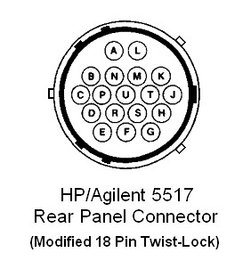
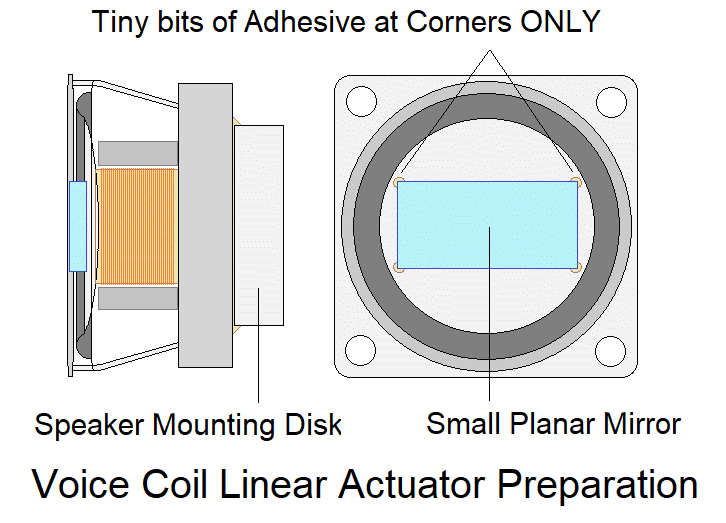
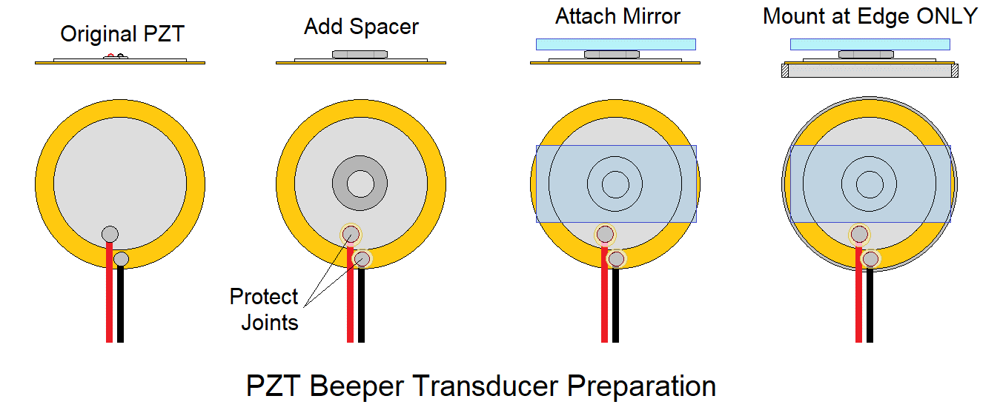
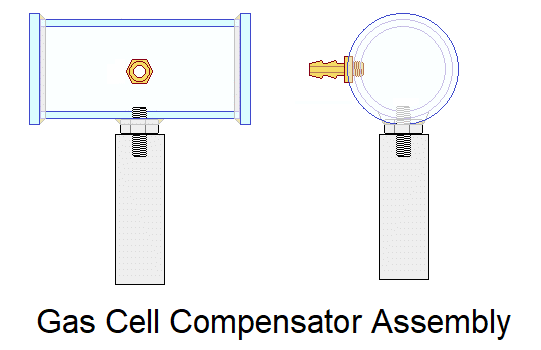
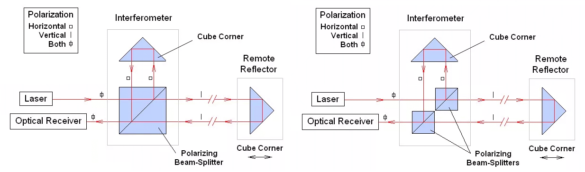
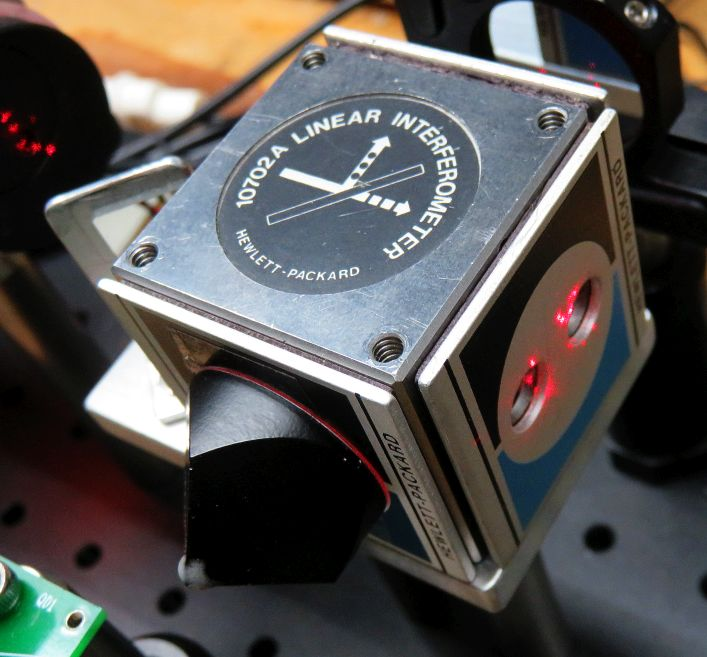
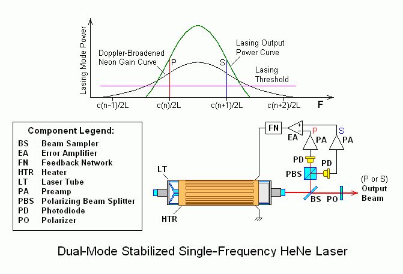
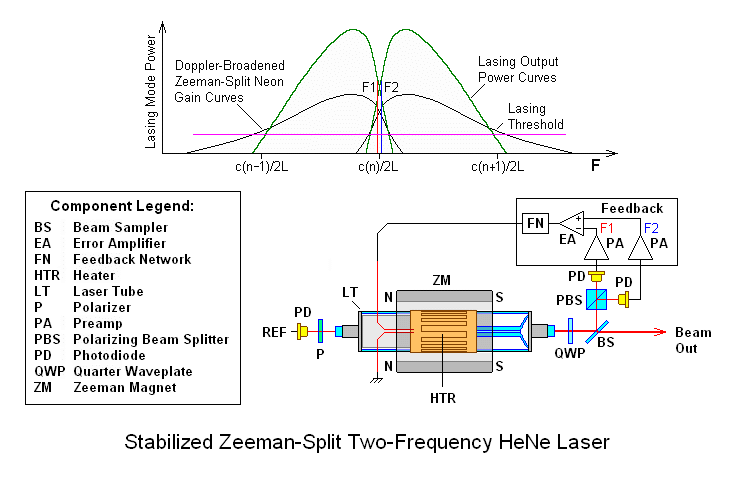

The information in this document
is intended for use in hobbyist, experimental, research, and other
applications where a bug in the hardware, firmware, or software, will not
have a significant impact on the future of the Universe or anything else.
We will not be responsible for any consequences
of such bugs including but not limited to damage to the $100,000,000
wafer FAB that was purchased on eBay for $1.98 + shipping, financial
loss from the waste of
28 spools of ABS due to the office 3-D printer fabricating a part with
random dimensions due to loss of lock, or bruising to your pet's ego
from any number of causes directly or indirectly related to
the implementation and use of this system. ;-)
The Michelson Interferometer experimental setups V1.0 and V1.5 were
originally developed for Engineering student projects at Swarthmore
College, Pennsylvania. V2.0 was the first one for sale. This is the
extension to heterodyne interferometry using a Zeeman HeNe laser.
The only safety issues with the experiments to be performed using this kit
are with respect to the low power Helium-Neon (HeNe) laser. Sure, you could
drop the breadboard or laser on your foot, but that's outside our
control. :( :-)
The first one is with respect to
laser light and your vision. The output power of the laser is
well below 1 mW which is less than that of
a typical laser pointer. Nonetheless, one should avoid looking directly
into the beam or specular (shiny) reflections of it. However a
momentary flash will not cause any permanent harm, only perhaps an
afterimage that should go away in a few minutes at most. A 1 mW laser
beam is similar in brightness to that of the noonday Sun. So treat it
like a little red Sun in a box. :)
The other one is electrical. The laser runs on a High Voltage (HV) low
current power supply. As long as the laser has its covers in place, there
is no risk. Only inside the laser should the laser tube itself
be unplugged could there be a shock from touching the connector contact,
feeling like the shock
from a static buildup when walking across a carpet on a dry day. It
won't hurt you but tossing the laser head across the room from a reflex
reaction is bad form (and probably won't help your grade). And there are
no user serviceable parts inside the laser, though it will be understandable
if you are curious. ;-)
Even though this laser is not likely to cause any harm, one should always
take laser safety seriously. Someday you may be working with one that is
truly dangerous.
The Michelson interferometer is one of the earliest and simplest
to be developed, but also likely the most widely used configuration
in a variety of applications including metrology (precision measurement).
The type found in most introductory textbooks use single frequency or
unstabilized lasers in what are known as "homodyne" interferometers.
They are the subject of the companion document:
Sam's Educational Michelson Homodyne
Interferometer Project Manual V2.1
This version uses a special two frequency laser to implement the "heterodyne"
interferometer, which are more likely to be found in high performance
commercial applications like semiconductor wafer foundaries.
An experimental setup is presented which allows for several types of
interferometers to be easily implemented without requiring any special
tools or test equipment. The behavior of various interferometer
configurations will be explored as well as the use of the interferometer
for sensing and extensions to actual
measurements like displacement (change in position) down to nm precision.
The set of parts may be easily duplicated and/or modified for specific
interests.
IMPORTANT: This manual applies to version 2.1 of
Sam's Educational Michelson Heterodyne Interferometer kits. (There is
no V1.x or V2.0 for heterodyne.) Here are links to all of them:
For the combined kit (heterodyne + homodyne), both of the relevant
manuals will need to be referred to, though there is a lot of overlap.
Detailed information and instructions on using and constructing most of
the sub components of these kits like the various custom PCBs may be found
at Sam's Electronics and Laser Kit Information and
Manuals. There will also be links to them throughout this manual.
Homodyne interferometers employ a laser which nominally produces a single
optical frequency ("laser line") while heterodyne interferometers employ
a laser that generates two closely spaced optical frequencies.
They each have their advantages and drawbacks. Much more on this below.
The default laser used in these kits is some version of a 5517 from HP
(Hewlett Packard), Agilent, or Keysight. They are all virtually the
same with name changes due to corporate changes. However, there is also
an advanced option to construct the two frequency laser from basic
components. This is discussed briefly later in this document with links
to more detailed information.
The photo below shows two typical configations of the Compact and Extended
Heterodyne setups.
Typical Compact and Extended Heterodyne Setups with
Ball Bearing Rails and OR3
Interferometers are the key technology is numerous applications in
manufacturing and testing where the very minute wavelength of light
is the "yardstick" providing non-contact measurements down to nanometer
precision. In short, a light source is split into two parts that may
travel different paths and then recombined at some type of detector.
Where the path lengths differ by an integer number of wavelengths, the
result will be constructive interference and the output of the detector
will be high; where it differs by an integer number of wavelengths plus
one half wavelength, the result will be destructive interference and the
output of the detector will be low. In between, the output will vary
sinusoidally. With suitable detectors and electronics, remarkably
precise measurements can be performed. For example, nearly every microchip
manufactured in the explored universe has been done with wafer steppers whose
stages were positioned using interferometry based on HeNe lasers.
While interferometers are employed in a wide array of applications,
the general emphasis for these experiments relate to the use of interferometery
in metrology - precision measuremens of physical characteristics like
displacement, velocity, angle, straightness, and more.
Therefore unlike numerous interferometer experiments that may be found via
a Web search, the emphasis here is on the signals that the setup provides,
not so much on the interference patterns. With the homodyne interferometers
using a non-two frequency laser (stabilized or otherwise), nothing
precludes the observation of these. However, with a two frequency laser,
the fringes aren't stationary and would have a bandwidth extending to MHz.
So, unless you've opted for the high performance eyeball upgrade, that's
out of the question. :( :-)
The experimental setups will enable various interferometer configuration
to be easily implemented and then tested with one arm being on a micrometer
linear stage and/or with some other device or material that can vary
the path length precisely.
The light source is a Class II 633 nm
Helium-Neon laser (HeNe for short) with an output power typically between
0.25 and 0.5 mW. Unlike the common HeNe laser, it produces two
optical frequencies ("lasing lines") separated by a value called the
"split frequency", and are implemented using a technique called "Zeeman
Splitting". In essense, an axial magnetic field applied to the laser tube
causes it to produce a pair of lasing lines (rather than
a single one), typically 10s of kHz to several MHz apart.
The "Z" used in various filenames and links throughout this manual is
an artifact of the Zeeman laser that is used. ;-)
The basic detector is a photodiode with AC preamp
called an "Optical Receiver". A dual channel digital oscilloscope
will be used for initial testing with µMD2 for actual
displacement measurment. Variations and enhancements to these
will be offered as options.
Among the areas that can be explored with the Basic setups are:
Techniques for aligning the interferometer.
Inserting optics in one of the beam paths.
Using the interferometer as a pressure and/or temperature sensor.
There is no need to construct all of the interferometer
configurations described below. Doing the Linear Interferometer (LI)
first makes sense
since there are detailed instructions on its construction, alignment, testing.
Building the High Stability Plane Mirror Interferometer (HSPMI)
would be the logical next step moving from cube corners
to plane mirrors. It also permits the loudspeaker and/or PZT actuators
to be added. Then after that one of the others. Perhaps coordinate with
the other project students using this same kit so that each of
you do different ones.
This minimal set of experiments can all be done using parts in the Basic Kit:
Construction of Linear Interferometer (LI).
Interferometer as air pressure or index of refraction of air sensor.
Interferometer as temperature sensor.
Heterodyne measurement display using µMD2.
The following additional projects can be done using parts in the Deluxe kit:
Construction and testing of other types of interferometers including the
PMI, HSPMI, and SBI.
Construction of Original Michelson Interferometer (BMI) and comparison
with the LI.
Resolution of the various interferometer configurations.
Sensitivity to alignment based on configuration.
PZT actuator for sub-wavelength-scale movement.
Loudspeaker actuator for wavelength scale movement and "interferometer
microphone".
Interferometer as earthquake and/or vibration detector.
The following are more advanced projects, but they
may require additional parts and/or different parts including the laser
that are not included in the either kit:
Interferometer as gas partial pressure sensor.
Construction of the laser itself (rather than the complete HP/Agilent
5517 laser) using a bare laser tube, magnet, heater,
power supply, mounts, and the µSLC1 Arduino-based controller
for stabilization.
There is some information on these in this manual and links will be
provided to learn more.
As of Winter 2022, there are 3 versions of the setups. Around 5 each of
V1.0 and V1.5 (which differ in minor details) have been built and are
being used for in-person and remote project labs at a local college;
V2.1 is the one for sale going forward and comes in several flavors.
The detailed asseembly instructions in this manual are for the
Heterodyne V2.1 and is most similar to the original Homodyne V2.1
but modified for use with the two frequency laser.
Various configurations of these kits have been available on eBay under my
user ID: siliconsam. But they have been discontinued due to infrequent
sales resulting in each being a one-off and more effort than was
worthwhile. However, if you are really interested - and motivated -
it may be possible to work out some cooperative arrangement directly.
There is a complete parts list at the end of this manual. Most opto-mechanical
parts are readily available from Thorlabs and hardware
from McMaster-Carr. I can provide the laser at a relatively affordable
price. The custom parts can be relatively easily fabricated, or I may be able
to provide them at modest cost. Contact me via the
Sci.Electronics.Repair
FAQ Email Links Page if interested in pursuing this.
Currently, there are three minor variations that differ only in the location of
the laser and the length of the ball bearing rail for Arm 2. The "Compact"
version places the laser entirely on the breadboard and is more convenient for
transport. Its main limitation is that the ball bearing rail is limited
to 150 mm so it fits on the breadboard. The "Mid-Size" and "Extended"
versions moves the laser to the left with an extension bar to
support the back of the laser and uses a 200 or 300 mm rail. Versions
include a Motion Control Platform (MCP) in place of the ball bearing
rail for Arm 2. In principle, a closed-loop positioning system
could be implemented using the interferometer and µMD2 for feedback,
though the required additional hardware and software is expected to
be developed by advanced project students. ;-) There is also a more
major variation permitting a 400 mm rail or 300 mm MCP to be installed
even on the Compact version, though without detailed assembly instructions.
Stay tuned.
As noted above, there will also be a combined "Het + Hom" kit which
frequency laser into a single frequency laser by blocking one of the
polarized components and orienting the remaining one at 45 degrees.
That modification will be detailed here, but for the experiments, one
is referred to the Sam's Educational Michelson
Interferometer Experimental Setup Project Manual V2.
Some of the photos are of the original prototype on a custom aluminum
optical breadboard. They are only for reference (and because I'm too lazy
to reshoot them!).
Note: Off-page links (including any clickable graphics)
open in a single new window or tab depending on
your browser's settings. A suitable fixed width or monospace font like
"Courier New" must be specified in your browser to make sense of the
simple ASCII diagrams. For Firefox, go to: "Settings", "General", "Fonts",
"Advanced", "Monospace", and confirm that it is "Default (Courier New)".
Since most of the optics and mechanical parts are the same for the homodyne
and heterodyne kits, it would be possible in principle to offer a combined
kit. But this may not a real good idea. The primary issue is
usable laser power. The maximum power available from the 5517 lasers
available for these kits is
order of 500 µW. To be useful for homodyne as a single
frequency laser, one of the polarized
components - F1 of F2 would need to be blocked by a polarizer. With a
sheet polarizer, the resulting linear polarized intensity would be order
of 200 µW. But the orientation needs to be at 45 degrees.
If that is done with another linear polarizer, the power would be cut
by another 60 percent or more to under 100 µW. Even if done with
a Half WavePlate (HWP), the power would still only be 200-250 µW.
So while it could be made to work, everything would be more finicky.
But even so, a combined kit will probably be offered in the future. ;-)
With the emphasis on the signal behavior of interferometers, the conversion
from light to electrical is critical - but very simple to implement.
To be able to view or do anything with the output of the interferometer
requires some means of converting light to an electrical signal.
For the homodyne system with a simple HeNe laser, an oscilloscope or
even a multimeter can be used to look at the signals from a pair of
photodiodes. For heterodyne, an
oscilloscope will still be useful for initial testing.
But Micro Measurement Display 2 (µMD2) or a readout with similar
capabilities) will be needed for quantifyiing the change in PLD
produced by moving the reflectors or using the interferometer as a sensor.
All signals are AC. For this kit, they will be either fixed (for REF - 1.5 to
2.0 MHz) or varying for MEAS (theoretically from <100 kHZ to 4 MHz or more),
though for reasonable velocity of the reflector, they will tend to be close
to REF.
So for the heterodyne interferometer, the detector is slightly more complicated
than a photodiode since it must operate at frequencies up to several
MHz and the available beam power using two frequency lasers tends to lower.
There need to be two signals:
REF: There is a dedicated optical receiver inside the 5517 laser
which monitors the difference between F1 and F2 and generates the RS422
reference signal output via a pair of pins on the laser head connector.
This electrical signal is called REF, which shouldn't be confused with the
reference optical path in the interferometer which is also called REF. ;-)
MEAS: For the output of the interferometer, an external optical
receiver is required. The one used here
is called OR3 (for historical reasons!) and
is a small PCB with a photodiode at one end and a 3 pin connector or
screw terminal block for the MEAS
RS422 signal at the other. This electrical signal is called MEAS which
also shouldn't be confused with the MEAS optical path in the interferometer.
Note that by convention, ARM 1 of the interferemeter (at the back of the
breadboard) is for REF; ARM 2 of the interferometer (with the stage) is
for MEAS. Even though they appear symmetric at first glance, for some
interferometer configurations, there is a difference in behavior, usually
a scale change. For example with the Linear Interferometer (LI), moving either
reflector results in the same change in PLD. However, for the Plane Mirror
Interferometer (PMI), Arm 1 has 1/2 the sensitivity as Arm 2.
A silicon photodiode (PD) when reverse biased
by a positive DC voltage (battery or power supply) allows a current
(designated Ipd) to flow with a sensitivity measured in amps / watt (A/W) or
for our purposes, mA/mW of incident laser power. (Photodiodes may operate
in "photovoltaic" mode without bias, but applying the reverse voltage
greatly increases the linearity and frequency response.)
The sensitivity for silicon at 633 nm is typically between 0.3 and 0.4 mA/mW
and linear up to several mW for the types of PDs used here. This relationship
holds even when a load resistor R-Load is installed between the PD
and circuit common (negative of the bias supply),
resulting in an output voltage that is linear with respect to
incident laser power based on Ipd * R-Load.
For example, with a laser power of 0.5 mW, a PD sensitivity of 0.35 mA/mW,
and R-Load of 10K ohms, Vo would be 1.75 V.
Note the polarity of the PD with its cathode connected to the positive of the
power supply and thus reverse biased. With no light incident on the PD,
only the so-called "dark current" will flow, which is generally small enough
to be ignored (nanoamps or less).
A very simple custom PCB is included to implement a similar circuit for
initial testing with an oscilloscope. It is called BPD1 but the PCB may
be unmarked or labeled something else. The bias supply can be +15 VDC from
the laser power supply, 12 V from the power pack used for various
experiments, or a 9 V battery. The load should be 2-3K ohms.
An optical receiver (which may be abbreviated as simply "OR") when used in
the context of heterodyne interferometry is the component
which converts a laser beam consisting of a pair of orthogonally-polarized
components at slightly different optical frequencies to an electrical signal
at their difference frequency. (ORs can also be used with any optical
input having an AC component such as an amplitude modulated beam.)
Traditionally, commercial 10780 ORs from
HP/Agilent/Keysight (or less commonly, 1031s from Excel) have been
included with the "DIY Interferometer
Displacement Measurement System Kits". However, not building the ORs has
always been considered as sort of cheating since nearly everything is, well,
DIY. And the commercial ORs are becoming harder and more expensive to
come by. ;-) In addition, they require 15 VDC and may not work
properly with the 12 VDC used in other parts of the kits, necessitating
the addition of a voltage boost converter. And there is that
unobtanium 4-pin BNC connector which means wiring is somewhat of a kludge.
OR3 is on a 1" by 2.75" PCB and remedies most of these deficiencies.
The optical input is a beam up to ~3 mm in diameter (using the default
photodiode) with an optical power
from <10 µW to >1 mW. While OR3 as tested doesn't have the frequency
response of the commercial ORs, its >3 MHz bandwidth
is more than adequate for systems using the kit lasers. And it is expected
that the bandwidth limit can be extended with trivial changes to only a few
part values. This is left as an exercise for the student. ;-)
Where optical power low and electrical noise pickup becomes an issue (or
for simply for convenience and aesthetics), a case with a copper foil
liner or wrap for shielding could easily be
fabricated for this using that lonely 3-D printer eagerly awaiting
something to 3-D print. ;-)
The actual SG-OR3 PCB is four layers with internal power and ground
planes. This does appear to have better sensitivity without stray noise
pickup than a two layer PCB with the same component placement but
no planes. The gain can be set at the half way point and still be quiet
with no signal without shielding. And the sensitivity there is better
than 2 µW at 3 MHz. The populated SG-OR3 PCB is shown below. It
may look HUGE in your Web browser. Don't be fooled. ;-)
Typical Populated OR3 V1.02 PCBs - with Headers and Screw Terminal Blocks
REF (F2, vertical) and MEAS (F1+ΔF1, horizontal) are passed through a
linear polarizer at 45 degrees to a back-biased photodiode.
The optical receivers provided with this kit add circuitry to
boost the signal and then convert to the RS422 signal format required
by µMD2. See Optical Receiver 3 (OR3)
- Assembly and Operation Manual. These are provided in kit form
with Heathkit™-style assembly instructions so construction
is not overly painful. ;-)
For "first signal" with the interferometer, an oscilloscope will permit
the actual phase difference due to the MEAS signal from the
changing PLD of Arm 1 and Arm 2
and the REF signal to be compared side-by-side (or more likely, one above
the other).
(Even though REF and MEAS are differential pairs - each pair being similar
but with polarity - we will usually refer to them simply as REF and MEAS
except as noted.)
For REF, either pin E or F on the laser head connector can be used. They
will appear as un ugly square wave. With no load, it will probably have
a peak-to-peak (p-p) amplitude of 3-5 V. Pin R can be used as the GND (though
any of the Grounds would probably be just as good here).
Laser Head Connector Pin Funtion
------------------------------------
E ~REF
F REF
Laser Head Connector Pin F o---------o Scope Channel 1
Power Head Connector Pin R o---------o Scope Channel 1 Ground
An AC signal on REF (and ~REF) from the laser is only present after READY
turns on solid. Since the rest of the interferometer does not affect REF,
it can be viewed any time the laser is powered and READY is on solid.
For MEAS, either BPD1 or OR3 can be used. Since at this
point, the SG-OR3 PCB may not have been built and tested, use BPD1. The
pinout is as follows (from left too right on the screw terminal block:
BPD1 Pin Function
-------------------------
1 GND
2 +Bias Voltage
3 PD 1 Anode
4 PD 2 Anode
PD1 is probably the one to use. The other one is intended to be used where
a beam-splitter separates the polarized components. As with the Thorlabs
DET110, a load resistor is required so the photodiode current can develop
a voltage to be viewed with the scope. At the frequencies that MEAS will
have, a value of a few K ohms is suitable.
2 R Protect PD1 3
+ Bias Voltage o-------/\/\---+-----|<|------+-------o Scope Channel 2
1K ohms | |
typical | /
_|_ C Bypass \ R-Load
--- 0.1 µF / 2-3 K ohms typical
| \
1 | | 1
- Power Ground o--------------+--------------o-------o Scope Channel 2 Ground
The signal will be a fairly decent sinewave at the REF frequency
with an amplitude proportional to optical power and R-Load.
However, the MEAS electrical signal will only be present when the F1 and F2
polarized components are both present and combined using a linear polarizer
at 45 degrees. This will be true directly from the laser but the signal
from the interferometer, correct alignment will be required.
With REF and MEAS displayed on the scope and synced to REF, any change in
PLD will show up as a change in the horizontal position (phase) of MEAS.
With the interferometer aligned, gently touching the breadboard or
even just walking across the floor will probably be easily detectable.
More on all this will be explained in more detail in the sections on the
Linear Interferometer.
In a heterodyne interferometer system (using a two frequency laser),
the displacement information is
contained in the phase difference between the REF and MEAS signals.
Where the remote reflector is stationary,
this difference is 0. When the PLD between the two reflectors
changes, there will be more or
less wavelengths between the interferometer and moving stage. This is
what needs to be determined and converted to a displacement in common
units like mm or inches.
A variety of techniques can be used to extract this information but virtually
all are ultimately based on digital counters for REF and MEAS whose
difference is used to calculate displacement, or a single
up/down counter with suitable logic to deal with race conditions.
These result in a basic resolution of 1/2, 1/4, or 1/8
wavelength depending on the type of interfermeter. Additional hardware,
software, or firmware are then (optionally) be used to extend the resolution
down to or below the nm range. A variety of techniques can be used including
Phase Locked Loops (PLLs) to multiply the REF and MEAS frequencies by
16 or 32 or more before applying them to the counters, or digital estimation of
the phase difference between the REF and MEAS signals. PLLs are used
in commercial systems like the HP 5508A while phase estimation is used
in µMD1, the predecessor to µMD2 - since it can be done
entirely in firmware. This is works-in-progress for µMD and may
be available before the Sun goes Nova. ;-) However, by using averaging,
similar resolution can be achieved but it just takes longer.
Early measurement displays like the HP 5505A were based on SSI-MSI TTL
and occupied 5-1/4" high rack mounted units. Modern ones are typically
implemented with a combination of microprocessors, FPLDs, and custom
LSI parts and would easily fit inside a box of playing cards.
While in principle, the scope discplay could be used for many of the
experiments later in this manual, a proper displacement readout makes
everything much easier.
The Zeeman interferometer kit is intended to use Micro Measurement Display 2
(µMD2), though any measurement readout compatible with HP/Agilent lasers
would also be satisfactory (including µMD1). µMD2 runs on
an inexpensive Teensy 4.0 microcomputer board which includes all the
required hardware except for the line receivers for REF and up to
three axes of MEAS signals. Counters inside the
CPU implement the basic measurement computations along with high performance
firmware in C and ARM assembly code which estimates the phase difference
between REF and MEAS(s) to extend the resolution. (The latter is a "works
in progress" as noted above). The source code is available
(though modification is highly discouraged).
Precision Measurement System using Two-Frequency Laser and µMD1
Measurement Display
The graphic above show the specific example of a Linear Interferometer (LI)
for displacement (change in position) measurements, with velocity calculated
as the rate of change of position. By substituting different interferometer
configurations, higher resolution displacement as well as angle, straightness,
and other physical variables can be measured.
The µMD Graphical User Interface (GUI) runs on PC or laptop
under Windows™ (XP/Vista/7/10/11 or later) via a USB interface.
Raw measurement data from
the Teensy board can also be input directly to something like Excel™
or Matlab™, or a user-developed
analysis application. The screenshots below of µMD1
show the displacement of
a mirror on a PZT driven by a triangle waveform from a function generator. The
p-p amplitude is around 60 nm and 10 nm for the left and right plots,
respectively.
As noted, µMD2 doesn't currently support sub-wavelength interpolation,
but if averaging is enabled and motion is relatively slow, the display
will be similar.
Although HP called the combination of the PBSC and reference CC attached to
it, the "Linear Interferometer", the term "LI" here will refer to the entire
setup. And to enable the PLD to be set to zero, the CC normally attached
directly to the PBSC will be mounted a few inches away (though with the
stabilized two frequency laser, the requirement for limited PLD is no
longer relevant).
The designations m-n show the paths taken by the Arm 1 and Arm 2 beams where
"m" is the Arm and "n" is the sequence number.
Linear Interferometer Diagram and Suggested Compact
Version Breadboard Layout
The other configurations will have a few additional or substitute parts and
small variations in the horizonatal position of the laser
and placement of the optical receiver but are otherwise similar.
Therefore only the LI setup will be described in more detail.
Baseplate: This is a 8x24x1/2" aluminum optical
"breadboard" with an array of 192 1/4-20 tapped holes on one inch
centers to which all the components are attached with cap-head screws
or set-screws. (We may use the terms "baseplate" and "breadboard"
interchangeably.)
HeNe laser: This is a Hewlett Packard (HP) or Agilent 5517
two frequency Zeeman laser mounted on 3 studs or set-screws that enable
its position and alignment to be easily adjusted. Power for the laser
is ±15 VDC from a pair of wall adapters. (The high voltage for the
HeNe laser tube is safetly tucked away inside the case. And even if it
is desirable to remove the cover to show off the interior, there are
no exposed high voltages.) The 5517 laser is of very high quality
with a sticker price if new above $8,000. It is the same type laser
used in numerous commercial applications
including countless wafer Fabs. The laser is the only somewhat fragile item
so please don't drop it or use it to hammer nails. Your instructor (and I),
and perhaps your grades won't like that. :( :)
Beam diameter from most of these lasers is 6 mm so that
experiments could actually be performed with optics up to several
meters away. Where it is desirable to do experiments over even
longer distances, a 9 mm beam may be requested.
And a 1-2 mm beam can be substituted where everything is on the
breadboard and the path length difference isn't too large.
A narrow beam
is a bit trickier to align and to maintain alignment as the stage in Arm 2
is moved, but it is quite adequate for a small range of PLD.
But where the PLD is large (e.g., for use as an earthquake sensor),
the larger beam eases alignment and is required so that the divergence
of the beam doesn't affect the detector response.
The heart of the setup is an assembly using optical
components from Hewlett Packard (HP), Agilent, or Keysight, or equivalents
from Excel or Zygo, which are all physically and funcationally
interchangeable. These may be configured like LEGO™ blocks in a variety
of ways to create several types of interferometers. Most descriptions
will use HP/Agilent/Keysight part numbers:
HP/Agilent 10702A or 10706A Polarizing Beam Splitter Cube (PBSC).
(The two part numbers are physically and functionally identical except for
the label.) This is a high quality 1" PBSC
mounted in a precision stainless steel frame.
HP/Agilent 10703A Cube Corner (CC) retro-reflector. This
is a glass trihedral prism installed in a stainless steel cylidrical case.
It can be attached directly to the PBSC.
A pair of HP/Agilent 10722A or equivalent Quarter WavePlates
(QWPs) can also be attached to the PBSC.
As a point of interest (or trivia), these parts cost something like $4,000
if purchased new. Fortunately for us, there is eBay. :-)
This assembly attaches to an aluminum "PBS Mount Adapter Plate" which itself
is secured to the breadboard with optical posts and spacers.
Two unmounted glass cube corner retro reflector
trihedral prisms: These can be secured in the
one inch Thorlabs KM100 kinematic mirror mounts with the KM100s rotated
180 degrees so the knobs face the PBSC.
For some of the other interferometer configurations, these will be replaced
either with 1" planar mirrors installed in the KM100s, or with a thinner
mirror glued to a loudspeaker or PZT. (More on these later.)
The turning mirror: is simply a small rectangular high
quality planar first surface aluminized mirror that redirects the
output beam to the detector if needed. The exit direction of the
beam depends on the specific interferometer configuration but most
of them direct the output to the left so to get it to the detector
requires a right angle reflection.
The optical receiver shown is the SG-OR3 PCB which provides most of
the capabilites of the HP/Agilent/10780 but may not look as cool. Or
way cool depending on our perspective. ;-)
Feel free to install it in a custom 3-D-printed case. :)
There are either one or two types of Polarizers in the kit:
Circular Polarizers (CP) are a Linear Polarizer (LP) combined with a
Quarter WavePlate (QWP). The LP axis is at 45 degrees to the sides.
Linear Polarizer (LP) sheet with its polarization axis lined up with
one of the sides.
The CP type can be used for most purposes in place of an LP. Specifically
here for placing in front of the detector and/or photodiodes.
Do NOT remove the protective film until ready to use. Also note that the
CP sheet has a weak adhesive on the QWP surface and it will attract dust and
debris (including grubby fingerprints!) Cleaning can be done with
isopropyl alcohol but the adhesive will still be there when it evaporates.
Only small pieces of these are required for any given purpose so they can be
cut as desired. Four or 9 equal pieces of each is probably a decent choice.
Use masking tape to stick them whever they need to be stuck to. ;-)
In fact, the primary use is to be mounted in front of the optical receiver
photodiode with the linear polarization axis at 45 degrees to combine
the H and V F1 and F2 polarized components from the interferometer.
For that, a ~4x6 mm piece of CP sheet is ideal and can be stuck directly
to the photodiode.
A variety of mounting schemes are used:
Laser: As noted above, the laser head comes with a set of "feet" -
aluminum blocks with U-shaped cutouts. These attach to the bottom of the
laser and sit on nuts threaded onto studs (set-screws) threaded into holes
on the breadboard. By adjusting the position of feet and their height,
very precise alignment can be fine tuned and then locked in place.
For the interferometers, the beam will need to be positioned at a
height of 4-1/4 inches above
the baseplate and either centered or offset approximately 1/4" toward
the back of the setup (as shown above) depending on the specific
interferometer being implemented.
PBSC assembly and turning mirror: The mount for this is the
"PBS Mount Adapter Plate" attached to a pair of 3" Thorlabs posts with
1/4" spacers. This replaces the funky wood block in the really early
versions of these kits. ;-)
Interferometer Arm 1: This would normally be the "Reference Arm"
in the basic Linear Interferometer. A Cube corner (CC) or one inch
first surface mirror is installed in a one inch Thorlabs
KM100 adjustable mount on a post in a post holder which allows for height and
rotation about the vertical axis, and also fine adjustment pan and tilt
of the CC itself via the knobs on the KM100.
Interferometer Arm 2: This is what the "Tool" of a displacement
measureing system (for example) would mount on. It has a similar KM100 for a
mirror or CC, but mounted on a micrometer controlled linear stage so that its
position can be adjusted very precisely, which in itself in on a lockable
ball bearing slide for coarse positioning. A loudspeaker with a mirror
glued to its cone to be used as an electrically driven actuator or as
a laser microphone can also be installed in the KM100.
Detector: The SG-OR3 optical receiver PCB attaches to a plate
that mounts on a Thorlabs post.
The following diagram shows the relationships of the various mounts
for setting the heights during assembly. This diagram applies to all
V2.1 setups. 4-3/4" places the laser in the center of the PBS vertically:
Required Optical Components and their Suggested Heights.
The only difference between the Compact, Mid-Size, and Extended versions
is mounting of the back of the laser. For the Compact version, the stud
is attached the breadboard; for the others, the stud is attached to the
xtension Plate.
If there is no desire to include any of the motion control options, the
height of everything can be reduced by around 1".
The heights of any Retro-Reflectors (RRs) in the setup will be
what most affect the beam height. This is true of the Linear
Interferometer (LI). Where there is an RR attached to the PBS
cube like the Plane Mirror Interferometer (PMI), the alignment
of the laser will need to be used. However, there is a wide
tolerance and enough degrees of freedom so in the end, it
should not really be much of a problem to set it up.
Here is an annotated photo of a typical setup configured for the DPLI:
Compact Version of Heterodyne Interferometer with Major Parts
Labeled
The following procedure may be used to install each of the parts and then
get to the point of "first signal" using the oscilloscope. The procedure for
the other interferometers will be virtually identical in most respects, but
may be trickier depending on the type.
Please refer to the appropriate layout diagrams below.
Linear Interferometer Breadboard Layouts for the
Compact Version (left), Mid-Size Version (center-Left), Extended Version (center-right), and with Long Rail or MCP (right)
An noted above, the only real difference between first these setups is in the
mounting of the laser and the length of the ball bearing rail (or motion
control platform). The Compact Version is most easily transported while
the Extended Version provides the maximum range of movement of the Arm 2
reflector. The Mid-Size Version represents a nice compromise.
The one on the right supports an extra length 400 mm ball bearing rail or
300 mm motion control platform. Assembly is basically similar but detailed
instructions are not provided, sorry. ;-) And it may be necessary to trim
one of the BA1Ss used to mount the laser to provide clearance for the mount
on the rail.
For the following it is assumed that nothing has
been mounted, but depending on the previous use,
some of these steps have already been completed. Refer to the layout
diagrams, above, parts locations that are known to work.
Parts attached with fasteners should be snug but don't overtighten unless
noted.
Breadboard: The default assembly is to put 5 rubber bumpers
on the bottom of the breadboard - 4 at the corners and 1 near the center
to avoid damaging the breadboard or surface on which is it placed.
This provides clearance underneath for at least one part (the MGN15
rail) that is best fastened using a screw and nut (Compact version) or
2 screws and nuts (Extended version). If it is desired
to mount the breadboard flush on an optical table, then the MGN15
rail can be mounted using a pair of screws into holes tapped into
the breadboard (not included).
Laser mount: Thread 1/4-20 nuts onto three 2" 1/4-20 set-screws or
threaded rods so around 1/4" of the thread is exposed. Thread the two studs
for the sides of the laser into the breadboard at the locations with
the "Xs" in the diagrams, above, to a depth such that the nuts just
touch the breadboard. Tighten the nuts against the breadboard
with an open-end or adjustable (e.g.,"Crescent™") wrench.
Then thread another 1/4-20 nut onto each stud so that the spacing between
them is exactly 3/8". Add a 1/4 washer to each
Compact version: Thread the stud for the back foot into
the breadboard at the far left location "X" to a depth such that the
nuts just touch the breadboard. Tighten the nut against the breadboard
with an open-end or adjustable (e.g.,"Crescent™") wrench.
Thread a 1/4-20 nut onto the stud so
that the spacing between them is exactly 3/8". Add a 1/4 washer.
Extended version: Secure the Extension Plate to the breadboard
in the location shown with a pair of 1/4-20 5/8" cap-head screws in
the coutnersunk holes. (The laser can also be mounted 1 inch further
to the left if it is desired to have more space on the breadboard but
only one hole may mate with a breadboard hole depending on the Extension
Plate length.) Thread the stud for the back foot into the Extension
Plate at the far left location "X" to a depth such that the nuts just
touch the Extension Plate. Tighten the nut against the Extension Plate
with an open-end or adjustable (e.g.,"Crescent™") wrench.
Then thread another 1/4-20 nut onto the stud so that the spacing between
them is exactly 1/8". Add a 1/4 washer.
Laser feet: A set of 3 mounting brackets called "feet" are included
with the laser. Two of these have been modified so that the "U" slot is
longer. They are for the sides. The other one is for the back.
With the laser upside-down on a padded surface, install
the modified feet on both sides of the laser extended out using only a single
M4 flat head screw for each in holes "S". Makes sure the feet extend at
right angles to the laser. With only a single screw securing
the feet, these should be a bit tighter than other fasteners. ;-)
Install the unmodified foot at the rear of the laser using 2 M4 flat head
screws in holes "R".
Rear bracket: Secure a BA1S to the rear foot at a right angle
to the laser with a 1/2" 1/4-20 cap head screw and 1/4" nut.
Compact version: The BA1S should be placed below the rear foot
with the recessed hole facing down to accept the screw head.
Extended version: The BA1S should be placed above the rear foot
with the recessed hole facing up to accept the screw head.
Laser: Flip the laser over and set it on the 3 studs in the
approximate location shown in the diagram. Add another 1/4" washer
to each stud and thread a 1/4" nut onto each but only make them
finger-tight for now as they will be used to fine tune alignment..
Laser power supplies: (These may already be wired.)
The laser requires 15 VDC at up to 2.3 A
and -15 VDC at under 200 mA. There are a pair of wall adapters /
power packs for the laser and optical receiver. One has a current rating
greater than 3 A while the other may be lower. If they have barrel
connectors, the screw terminal adapters may be used to make the wiring
convenient, though soldering is better.
The power packs have US plugs or a socket for a power cord. For use
overseas, appropriate plug adapters will need to be provided. These are not
included since there are approximately 653,248 different power standards
Worldwise and shipping would be kind of high if all were included. ;-)
In that case, the cord may also not be included.
The higher current power supply may be rated at 16 VDC. If that is the case,
a high current diode should be installed in series with the positive (center)
lead to drop the voltage to an acceptable range. The bar on the diode should
face AWAY from the supply.
The common point is the negative (-) of the higher current supply to the
positive (+) of the lower current supply.
Laser head connector wiring: Only ±15 VDC, GND, and the REF
signals need to be wired. For a short cable as is likely used here, the
shields and other wires can be ignored. "Short" means a meter or less.
The pinout for the HP-5517 power/reference connector (J2) is as follows:

Pin Function
----------------------------------------------------------
A No Connection on 5517
B " "
C " "
D " "
E ~REF (Zeeman beat signal from internal optical
F REF receiver's differential line driver)
G,H Ground
J +15 VDC Sense
K +15 VDC
L -15 VDC
M +15 VDC
N,P Cable Shield
R Signal Return (REF)
S Ground
T +15 VDC
U Cable Shield
The diagram is of the connector on the laser. and the contacts on the
rear of the cable connector.
Use AWG 22-20 stranded insulated hookup wire, preferably color coded for
+15 VDC (yellow or orange), -15 VDC (blue or violet) and GND (black or
green). And any other convenient colors for the REF signals.
Strip around 1/8" of insulation and insert into the connector socket.
With tinned hookup wire and the gold-plated sockets, soldering is very
easy. Add a short length of heatshrink tubing to protect and insulate
each connection after each solder joint is made as this also prevents
solder bridges between pins.
For the short cable, it is also not necessary to connect all the duplicate
pins, though that won't hurt. And for those, there is no need to run all the
wires the full length of the cable; they can be joined near the connector to a
fatter wire.
The REF/~REF cable MUST include a GND to tie the µMD2 PCB to the
system GND.
Double check that the connections are correct and secure.
Powering the laser: It is best to plug both power packs into
a switched surge-protected filtered power strip but this is not essential.
When power is applied, both of the Power LEDs as well as the
Laser ON LED should come on immediately. The laser then will go through
a warmup sequence that takes 4 to 5 minutes. Around halfway through
it, the READY LED will start flashing. When it stays on solid, the
laser is stable and ready to use. ;-)
If the Power and Laser LEDs do NOT come on, power down and troubleshoot.
It means there is a bad connection, bad power supply, or incorrect wiring.
The laser is fairly well protected against the latter, but an internal
fuse may blow if, for example, +15 were connected to -15. (Don't try it -
I an not sure of what will happen, but it won't be good.)
Laser alignment:
For the Linear Interferometer (and most others), the beam needs to be
offset 1/4" toward the back (far side) of the breadboard at a height of
4-1/4 inches.
Doing this accurately is critical to the ease with which the
subsequent alignment can be performed since not all mounts have
sufficient degrees of freedom to accomodate an arbitrary beam
location and direction. Fabricating "alignment aids" out of carboard
or thin sheet metal may be useful.
One should have a cross with a small hole in its center and be
positioned near the laser 4-1/4" above the baseplate (if using the latest
version of this interferometer design) and 1/4" offset to the back
relative to the centerline of the optics (the third row of holes in the
"Linear Interferometer Diagram and Suggested Breadboard Layout" diagram,
above). If the PBS is already installed, the height would be centered
within it and offset 1/4" to the back of its center.
The other should be mounted near the far end of the breadboard with a
cross centered at the same height and offset (4-1/4" from the baseplate
and 1/4" toward the back of the optics centerline). No hole is needed.
Both of these could be right-angle brackets fabricated from aluminum roof
flashing attached to optical posts with Acco™ labels to mark the
crosses.
Alignment is then "just" a matter of alternately adjusting the front and
rear laser mounts for the same axis alternatively to center the
beam in the hole and on the cross at the far end:
Align the laser roughly parallel in X and Y using the slots in the
BA1S and feet, and the height adjustment screws and nutsand so the beam
passes through the hole in the first alignment aid. Note that the
tube may not be perfectly aligned inside the laser the laser
case may seem to be angled when in fact the beam is correct.
Use only the slots of the BA1S and feet alternatively to dial in the
beam horizontally on the second alignment aid's vertical line of the cross.
Use only the laser height adjustments alternatively to dial in the beam
vertically on the second alignment aid's vertical line of the cross. Note
that both of the front feet heights should be adjusted at the same time.
Go back and fine tune if needed.
Interferometer assembly: This consists of the Polarizing
Beam-splitter cube, mounting plate, 2x 3" posts. 2x 1/2" 1/4-20
set-screws, 2x 1/4" spacers, 2x 8-32 x 1/2" cap-head screws.
Attach a pair of 3" posts to the breadboard with 1/4-20 x 1/2"
set-screws in the locations shown above. Thread the set-screws about half-way
into the breadboard. Then with something thin pressing on their sides to
prevent them from turning, thread the posts onto the set-screws until they
contact the breadboard. Use a thin rod (e.g., hex wrench) through the
hole in the post to tighten them.
Attach the "PBS Mount Adapter Plate" to the posts with a pair of 8-32 x 1"
or 1-1/8" cap-head screws with 3/4" spacers between the plate and post. The
screw on the right should be made fairly tight as it won't be accessible
once the PBSC is installed.
Remove any optics that may be attached to the PBSC. They will not be
required for the LI. Store them wrapped in soft paper towels, bubble wrap,
etc., to protect the optical surfaces.
Place the PBSC on the PBS Mount Adapter Plate so that the diagnonal
marking is front-left to back-right with the "In" arrow pointing
left-to-right.
Use four 4-40 x 1-3/4" cap-head screws to secure the PBSC to the plate
from the top if the adapter plate holes are tapped or four 6-32 x 1/2"
cap-head screws from the bottom if they not tapped.
The laser beam should pass through the PBSC centered vertically and 1/4
inch toward the back. It should be at the same location relative to
the breadboard at the far end. If not, fine tune alignment. :) Getting
this dialed in via the nuts on the studs will greatly simplifiy alignment
later.
Turning mirror: Use tape or a *tiny* bit of adhesive to attach the
turning mirror to the right angle "Turning Mirror Bracket" centered
vertically with respect to the PBSC and flush with the right edge. Attach
the bracket to the PBS Mount Adapter Plate with a 3/8" 4-40 cap-head screw
and #4 washer. Center the screw in the elongated hole for now.
Arm 2: These steps assemble the components of Arm 2. Arm 2 is
assembled first because the lateral position of the CC cannot be adjusted
relative to the laser.
Thorlabs rail, ball bearing rail, or motion control platform:
This assumes an initial installation, not swap.
Thorlabs rail (Homodyne only):
Attach the Thorlabs RLA0600 6 inch rail (Basic and Deluxe) or Thorlabs
RLA1200 12 inch rail (Deluxe+ version) to the breadboard. The recommended
location is shown in the diagram above.
Add 8-32 screws and #10 washers to the ends of the rail to act as
stops.
Attach the linear stage to the RC1 carrier using a 4-40 cap-head screw
and washer.
Install the stage/carrier assembly onto the RLA rail.
Ball bearing rail (Heterodyne or combined):
Attach the MGN15-150mm rail with MGN15C carriage to the breadboard.
Try to avoid removing the carriage from the rail as it is then easy
for some ball bearings to attempt to escape. :( ;-)
Since the holes in the MGN15-150mm rail do not line up with
breadboard holes, it is attached to the breadboard with either a pair of
6-32 cap-head screws installed in special tapped holes, or one of these
along with a 6-32 screw with nut and lockwasher through a 1/4-20 hole.
The recommended location is shown in the diagram above.
Attach the linear stage adapter plate to the MGN15C carrier using
four M3-6mm flat-head screws. Tighten these securely as they won't
be accessible after the other parts are installed.
Attach the linear stage to the MGN15 adapter plate using four
4-40 1/4 inch cap-head screws at the corners.
Add stops at both ends of the rail using the rubber bumpers (150 mm
rail) or screws, spacers, and nuts (300 mm rail) provided. ;-)
Motion Control Platforms: These instructions will differ slightly
depending on whether the MCP is Type 1 or TYpe 2, and on the length.
If purchased at the same time as the
interferometer, holes will already have been
drilled in the breadboard for the stepper motor rig, with the motor
on the right. These locations will enable the maximum usable travel.
Else holes wlil need to be added.
Secure the platform on the breadboard using four 4-40 1/2" cap-head screws
if the holes are tapped, or 4-40 3/4" screws and nuts if not.
Take care to assure that it is aligned.
Attach the linear stage adapter plate to the platform using four M3-6
flat-head screws. To maximize travel, the plate should extend to the left
(toward the PBS).
Attach the linear stage to the linear stage adapter plate using four
4-40 1/4 inch cap-head screws at the corners.
Refer to the "Suggested Heights" diagram and attach a 2" post holder
(rail or slide) or 1" post holder (MCPs)
to the linear stage with an M3-12mm cap-head
screws and #4 washer through the hole in the bottom of the post
holder. Orient it so the knob on the post holder is easily accessible.
Center the screw as best as possible and tighten it securely. Note: The
hole may be tapped 4-40, in which case the screw should be 4-40 1/2".
CAUTION: Make sure the tip of the screw does NOT contact the fixed part of
the linear stage. If it does, an addition washer may need to be added. Or
the screw can be shortened slightly with a metal file or grinding wheel.
Adjust the micrometer so the stage is approximately in the center of
its travel range.
KM100 or similar mirror mount: Secure to a 1" post (rail or
slide or MCP Type 1) or 3/4" post (MCP Type 2) with an
8-32 3/8" cap-head screw. Slip the post into the Arm 2 post holder and
hand tighten its thumbscrew. Adjust the two alignment knobs so that
the mounting plate is parallel to the base in both directions. If the
adjustments are too tight, check that any locking screws are not tightened.
Else, total removal, cleaning, and lubricating with a tiny amount of
light grease or machine oil will be required.
Cube Corner (CC) trihedral prism: Install the CC in the KM100
with its apex facing out and oriented so that a flat is at the top or
bottom. (This reduces the chance of the beams hitting an edge of the
prism.) Alternatively, look into the CC and orient it so there are lines
oriented vertically. It should be secured with either a soft-tipped
set-screw or Nylon wide-head screw. DO NOT overtighten - it should be snug
enough not to fall out (these are fragile!) but not so tight as to smash the
CC! Note that the CCs mount backwards from what might be expected so that
their edge can be secured properly. It's flat surface is facing through
the mount.
Set the knobs of the adjustable mount so its fixed and moving
plates are approximately parallel and orthogonal to the beam axis as in
the diagrams.
The horizontal and vertical position (not orientation) of the CC
relative to the incident beam adjusts the corresponding coarse position
of the return beam.
Since the adjustable mount on Arm 2 and thus its CC cannot be moved
laterally relative to the laser, the laser alignment should be double
checked and fine tuned via its mounts if necessary so the incident
beam is offset 1/4" toward the back of the setup from the center of
the CC and aligned with the holes, and thus the return beam will be
offset 1/4" toward the front of the setup and parallel to the incident
beam.
The vertical position of the CC is adjusted by loosening the post
holder's thumb-screw and should be set so the incident and return beams
are at the same height.
Place a piece of paper where the detector would be for the beam from the
turning mirror. Fine tune the orientation and height of the mirror mount
so there is a bright return beam there from Arm 2.
Arm 1: These steps assemble the components of Arm 1. It may be
desirable to block the return beam from Arm 2 until the initial Arm 1
adjustments have been done.
Attach a 2" post holder to a BA1S holddown with a 1/4-20 3/8"
cap-head screw. Orient it so the thumbscrew (knob) is accessible.
Attach this assembly to the baseplate using a 1/4-20 1/2" cap-head-screw.
KM100 or similar mirror mount: Secure to a 2" post with an
8-32 3/8" cap-head screw. Slip the post into the Arm 1 post holder and
hand tighten its thumbscrew. Adjust the two alignment knobs so that
the mounting plate is parallel to the backplate in both directions. If the
adjustments are hard to turn, check that any locking screws are not
tightened. Else, total removal, cleaning, and lubricating with a tiny
amount of light grease or machine oil will be required.
Cube Corner (CC) trihedral prism: Install a CC in the mount with
its apex facing out and oriented so that a flat is at the top or bottom.
This is to orient the prism so that the beams do not hit an edge.
It should be secured with either a soft-tipped set-screw
or Nylon wide-head screw. DO NOT overtighten - it should be snug enough not
to fall out (these are fragile!) but not so tight as to smash the CC!
Note that the CCs mount backwards from what might be expected so that their
edge can be secured securely. :) They thus face through the mount.
Start with the knobs of the adjustable mount set so its fixed and moving
plates are approximately parallel and orthogonal to the beam axis as in
the diagrams. The BA1S can be moved to adjust the coarse horizontal
position of the return beam. The post holder's thumb-screw may be loosened
to move the adjustable mount up or down to adjust coarse vertical
position of the return beam. The return beam should hit the PBSC at the
same height as the incident beam, and offset 1/4" to the
left of center. The spacing between the centers of the incident and
returns beams should then be 1/2".
Using your piece of paper with the Arm 2 return beam unblocked,
there should now be two spots reflected from
the turning mirror corresponding
to the returns from Arms 1 and 2. (Unless, that is, you're very lucky
and they are already superimposed perfectly!)
Adjust the position and orientation of the CCs to superimpose the return
beams from Arm 1 and Arm 2. This can be fine tuned with the
adjustable mount knobs initially by eye. Then later once the oscilloscope
is set up, it can be further optimized by maximizing signal amplitude from
the detector.
Set up the oscilloscope: (If using a USB scope, this assumes that
the required software and device drivers have already been installed on your
PC or MAC.) For input, use one of the scope probes on the 1X setting
(there is a slide switch on its body).
Connect the REF signal to channel 1 using one of the REF wires from the
laser head and GND. Set the scope to trigger on channel 1. With the
laser powered and READY, there should be a stable ugly squarewave
displayed at the REF frequency (between 1.5 and 2.0 MHz).
Detector mount:
Attach a BA1S Holddown to a 2" post holder with a 1/4-20 3/8"
cap-head screw.
Install a 2" post into the post holder with the small (8-32) tapped
hole at the top with the lock screw just snug.
Clamp the assembly down loosely with a 1/4-20 1/2" cap-head screw.
Biased photodiode on solderless breadboard:
Install a photodiode,
1K ohm resistor, and male-male jumper wires to the solderless breadboard
based on the circuit in the section:
Biased Phoatodiode (BPD1), or use the BPD1 PCB.
install a 2.2K ohm resistor for R-Load. If you don't have one or
something close in your private stock ;-) one can be borrowed from
the SG-OR3 parts for now.
Tape or place a piece of LP or LP/CP to the front of the sensor with its
polarizaiton axis at 45 degrees (edges at 0/90 degrees). If using the CP,
remove the protective film from both sides and the sticky side can be stuck
directly to the face of the PD.
Apply bias power to the home-built detector from the +15 VDC
laser power supply, the 12 VDC adapter, or a 9 V battery.
Adjust the position of the detector so that the combined return beams are
centered on the active area of the sensor.
Connect BPD1 and GND (across the load resistor) to scope channel 2.
If alignment is close, there should be a strong signal for MEAS on
channel 2 at the REF frequency whose horizontal position varies
dramatically with the slightest change in PLD or just
touching the breadboard or anything on it! Even without going
anywhere near the setup, there will still likely be instability due
imperceptible vibrations possibly due to a bus 2 blocks away. ;-)
The wavelengths of light are TINY! Each full cycle is 1/2 wavelength or
around 316.5 nm. The micrometer moves the stage by 0.5 mm per full
rotation, or around 1,389 nm/degree.
(Even if one beam is blocked, there could still be a weak signal
due to imperfect optical coatings and such resulting in cross-talk
between REF and MEAS. But it will be stable and locked to REF. That's the
tip-off that the interferometer is not working.)
If the scope is triggered on channel 2 and the Arm 2 cube corner is moved
rapidly back and forth on the rail, the MEAS frequency should change -
increasing if the PLD is decreasing and decreasing if the PLD is increasing.
If it doesn't change, alignment is not correct or an optic is installed
incorrectly.
The amplitude of the AC part of MEAS
can be maximized using the knobs on the Arm 1 and Arm 2
adjustable mounts. The signal amplitude may vary slightly over time
as the laser continues to warm up.
The time scale will depend on how long the HeNe has been on. Why?
There can be several causes.
And for those new to interferometers, to reiterate,
the optimal alignment will also be
where the signal instability is maximized. ;-) Almost ANYTHING will
affect it from touching the apparatus or table on which it is on,
to just walking across the floor. The wavelength of light is really
really small. ;-) To put this in
some perspective, a full cycle of the signal with the Linear Interfemeter
is a change in PLD of 316.4 µm (1/2 wavelength of 632.8 nm or
1/3160th of a mm). That's about 1/158th the
diameter of an average human hair (~50 µm) or 1/22th the diameter
of a human red blood cell (7 µm). Street traffic will be detectable,
as will drafts from the A/C, changes in temperature, and siesmic
events. Some of these effects can be further explored using parts in
these kits.
Now you're set to explore all sorts of exciting aspects of
heterodyne interferometry. ;-)
High Stability Plane Mirror Interferometer (HSPMI)
The basic Plane Mirror Interferometer (PMI) as its name implies uses a
plane mirror instead of a cube corner for the remote reflector. It has
a double pass architecture which halves the distance for a full fringe
cycle at the detector for a movement of the reflector in
Arm 2 (called the "measurement arm"). However, if NOT using
a stabilized laser (single or two frequency) it is not
desirable to use a PMI here because it
is double-pass only for Arm 2 but single pass for Arm 1. Thus
while the PLD can be set to zero, the spacings or lengths of the
two arms (as well as the change in displacement) are not the same,
which at the very least is confusing. (More on this in the section
on the PMI.)
The HSPMI on the other hand is perfectly symmetric: The beam paths for both
Arms 1 and 2 are double pass and go through the CC. However, the change
in PLD is double the change in position of the mirror in either arm. Thus
it could also be used as a differential HSPMI where the relative displacement
of Arms 1 and 2 is to be measured.
For use with a single frequency laser for homodyne or two frequency laser
for heterodyne, the unequal path lengths is of little
consequence. However, if building only a single type of plane mirror
interferometer, it might as well be the HSPMI.
Normally, the Arm 1 mirror would be mounted along with the QWP on the PBSC
as the reference since absolute PLD doesn't matter with the single
frequency or two frequency lasers. For this setup, it's more convenient
to mount the Arm 1 QWP on the laser and the associated mirror separate.
As with the LI, above, the designations m-n show the paths taken by the
Arm 1 and Arm 2 beams where "m" is the Arm and "n" is the sequence number.
The only real difference in the assembly procedure is the addition of the\
QWPs and substitution of the planar mirrors for the cube corners.
Alignment will be similar though the effects of beam height and offset
will change subtly. But what fun would it be if nothing was different? ;-)
Assuming the LI was already built, not many changes/additions are required:
Install the HP retro-reflector (10703A) on the PBSC face closest to the
detector. The orientation should be such that the beam doesn't hit an apex.
This usually means the serial number (if present) runs up and down.
Install QWPs (HP 10722A or unmarked) on the faces toward the Arms. Their
orientation does not matter as long as the screw slots are used.
Replace the unmounted cube corner retro-reflectors with circular
1" planar mirrors. The mirror mounts can be rotated 180 degrees to make
them easier to adjust.
Adjust the location of the Arm 2 planar mirror so that the PLD is close
to zero. Since the Arm 1 and Arm 2 beam paths are identical,
distances from the mirrors to the faces of the PBSC block can be used.
Alignment will be similar to that for the LI, differ in some respects
due to the planar mirrors and double pass architecture:
Adjustment will be more finicky. While grabbing and
manipulating the entire mirror mounts may be acceptable for the LI,
the knobs should probably be used for the HSPMI. Why?
The signal level will be lower by as much as a factor of 2 or more.
Trace the beam paths and compare them to those of the LI. Why?
The entire purpose of these setups is to measure what happens with changes
to the PLD either explicitly or as a result of some external influence. For
example twiddling the micrometer stage knob or using the setup as a temperature
sensor. Monitoring of the behavior in either qualitatively or quantitatively
can be done in several ways. For small changes, direct observation of the
REF and MEAS signals is the simplest
and often the most precise. But for larger changes, using the µMD2
measurement display will be required.
These use test equipment like the DSO to show what's going on at the
very lowest (signal) level. They are most effective for relatively
slow changes of up to a few dozen
wavelengths, usually found in the various experiments with interferometer
sensors. But these can also be the result of turning the micrometer knob
or tapping on the breadboard.
Using the DSO to directly view REF and MEAS: This is simplest.
Display the waveforms for REF
from the laser head cable and MEAS from BPD1 or OR3 above the
one-another on the scope. Trigger on REF. Then the MEAS waveform
will move back and forth relative to REF as the PLD changes. Almost
any type of oscilloscope with a bandwidth of at least a few MHz would
be adequate.
With care, both the gross change of the PLD in integer wavelengths as well as
the subtle variation in rate of change at sub-wavelength resolution
can be observed either directly or by
recording the display and playing it back in slow motion. Since the
change is analog - not quantized into bits - more subtle behavior can
be easily seen at a resolution down to a few nm. And the extreme
sensitivity of the interferometer to any disturbance will be obvious.
REF-MEAS difference: Another method that would provide a display
that might be useful is to combine the REF and MEAS signals using a simple
resistor network. However, this does lose the direction information. A 10K
ohm pot wired with terminals 1 and 3 connected to REF and MEAS, and
the wiper connected to a DSO with a 10K ohm resistor to GND would
provide a voltage at the split frequency with
an amplitude that would vary based on their phase relationship - maximum
when in phase and minimum when 180 degrees out of phase. The pot would
be used to maximize the variation to account for any difference
in amplitude of the REF and MEAS signals. The envelope of the combined
signal can then be displayed on the DSO.
µMD0, µMD1, or µMD2 - can provide a numberic readout
or plot via the PC GUI or more directly on a DSO with some small additions
to the firmware and hardware. OR3 or AB2
will be required to provide the RS422 signals
And the resulting display may be more quantized ("steppy") in appearance
for small changes in PLD than direct measurement of the
analog signals.
Displacement readout: Although nothing
is moving for an interferometer sensor like the gas cell,
the displacement readout and graph will correlate with a change in the
index of refraction of what's inside, which can thus be calculated.
In effect, the value will
represent by how much the number of wavelengths that fit in Arm 1 is
changing. This is subject to a scale factor, which will be affected
by the "Interferometer Type" and "Wavelength" settings. It may
be possible to finagle the scaling to display an index of refraction
offset, but probably not an actual index of refraction.
If the graph "Displacement Range" for the GUI is locked,
then the display will appear
similar to that of a scope, scrolling continuously right-to-left rather
than sweeping repetitively from left-to-right.
Firmware-only enhancements to generate analog output: The
addition of some simple C code to generate a voltage proportional to
displacement and a means to reset it would result in a display on a
DSO similar to the Homodyne version, above.
Any additional circuitry can be wired to
the pad array on the PCBs or installed on a separate solderless
breadboard or prototyping board Two simple additions are required:
Analog voltage: This is easily generated in C code based on
the value of DISP(lacement) in the firmware. It is sent one of the
microprocessor's WPM-capable output pins. A simple RC
filter can be used to remove the PWM switching noise.
Reset to zero voltage: This is necessary because the µMD
GUI "Reset Display" button only zeros the value used by the GUI and
there is currently no means of sending information
from the µMD GUI to the firmware - and that's not likely to change.
An SPST momentary switch can be added between an IO pin and GND.
Firmware would simply look for a LOW and clear the REF and MEAS
counters. If this was done at the same time the "Reset Display" button
was "pressed" on the GUI, they would track.
Source code for the GUI can be made available, but changing anything
is highly discouraged! Hacking the firmware for µMD0 (Homodyne
only) is straightforward. For µMD2 (Homodyne and Heterodyne
versions), it is more dicey but shouldn't explode the Universe if
care is taken to limit additions to the code just before the values
are sent to the USB port - and not messing with any values that
impact what is sent! However, there is no - zero - tech support for
unauthorized changes, even to a single bit in a comment fields. I've
lost too many brain cells in the creation of the GUI and firmware to
want to revisit them. And after overloading my brain, many of the
relevant memories have been off-loaded to long term storage. ;( :-)
These are various methods of changing the PLD manually and electronically,
as well as using the interferometer as a precision sensor. The
typical arrangement is that Arm 2 is for the actuators
(both manual and electronic) and Arm 1 is for the sensors but that's
not cast in stone.
Before proceeding with any of these, please read the sections on
Monitoring the PLD since changing the PLD
without measuring it is like a tree falling in a forest with
no one around. ;-)
All setups after V1.0 come with either a Thorlabs rail (RLA0600 or RLA1200),
or a ball bearing rail (MGN15-150mm or MGN15-300mm). The latter is standard
with V2.1. The rails allow for coarse positioning of Arm 2 to adjust the PLD.
The advantage of the ball bearing rail is smoother movement
so that the alignment is not lost and thus the measurement readouts (µMD0
or µMD2) can track without error.
All setups come standard with a precision micrometer linear stage that mounts
on the rail carrier or carriage. Three
types have been used: a Parker 3902 (English) or 3902M (Metric), a generic
stage with the knob on the end, and a generic stage with the knob on the
side (both Metric). All types have a range of around 1/2 inch
or 12.7 mm. The generic stage with the knob on the side is the default
type with V2.1. The knob on the side is preferred in part because it won't
interfere with the Motion Control Platform's motor housing.
The micrometer stages permit µm-scale displacement to be manually
set, though as a practical matter doing *anything* at that resolution
manually is a challenge. And even just touching the knob introduces
a displacement shift and vibrations which are easily detectable and
jitter in the fringe display or measured displacement.
This is currently an option but may be included standard in the future.
It would replace the Thorlabs or ball bearing
rail and carrier with a stepper motor-driven platform and an
Arduino-compatible board to drive it. Among other things, this will
enable the characterization of non-linearity, backlash and
displacement scaling error. These are critical parameters in CNC
machine calibration. In addition, controlling Arm 2 motion electronically
should introduce far lower vibration than actually touching the micrometer
knob.
However, these are not super precision rigs. Their selection was based on
the small size to fit the interferometer setup - and cost. So they may have
significant free-play, backlash, and other errors. But that's exactly the
sort of thing that experiments can aim to characterize. The main issue is
that they use a lead screw (not a ball screw) into a threaded brass block.
And aside from a setup like that being inherently imprecise, the
machining is sometimes, well, not so great as well. :(
(Doing something similar using a servo motor rather than stepper motor
is possible and theoretically superior, but likely much more expensive
and complex.)
The basic components are:
Mini stepper motor driven platform: The Arm 2 reflector
and micrometer stage will be mounted on this in place of the ball
bearing rail.
There are currently 2 variations designated Type 1 and Type 2. Type 1 is
smaller (height and width), but is not as precise as Type 2, which is also
slightly more expensive. But both are quite compact. Other types could
be used but they quickly become massive and just a wee bit overkill to move a
mirror mount. ;( :-)
The default models that have been selected have a travel
length of either 100 or 200 mm. The screw pitch for Type 1 is 1 mm
resulting in 200 full steps per 1 mm of linear movement. For Type 2 the pitch
may be 2, 4, 6, or 8 mm resulting in 100, 50, 37.5, or 25 full steps per
1 mm of linear movement. The default will either be 2 mm or 8 mm (my choice).
Stepper motor controller: The default will be a
a STEPPERONLINE DM320T NEMA micro-step controller. It
is capable of generating up to 32 micro-steps per for each
basic motor step, though how linear they will be is not known.
For the coarsest setting, 1 input pulse moves the platform
by 1/2 the basic step or 1 mm / 400 = 2.5 µm. When set
for 32 micro-steps, the resolution becomes 0.078125 µm.
Funny how that works out to be close to 1/8th
of 633 nm. ;-) Of course, backlash and free play
in the system means achieving anything close to
this is probably a total fantasy, but
characterizing the various errors is part of the goal here using the
interferometer as the reference.
For more of a DIY approach, an Arduino A3967 EasyDriver or something
similar may be used, but their maximum current and micro-step
resolution are usually much more limited. An even more rudimentary
approach using an H-bridge driver shield and suitable Arduino sketch
could also be used. But doing something like either of these is
not really worth it unless what you really want to do is explore
the finer points of motor control rather than interferometers. ;-)
Arduino or PC software to issue commands to the motor controller.
These would mostly be in the form of direction and pulses to move
the stepper motor. For stand-alone control, an Arduino NANO or UNO
would probably have enough capabilities. Or the motion control
functions could be integrated into µMD2 since the Teensy 4.0
should have more than enough horsepower.
A PC or MAC (GASP) Graphical User Interface (GUI) to implement the
top-level motion control and comparison via data from µMD2 of the error
between the issued commands and actual displacement.
The setup below was used for the initial implementation and is similar
to what will be included in the kit, (currently an option). This rail with
a travel of 200 mm would fit easily fully on the "Extended" version of the
interferometer. In fact, rails with a 250 mm travel would also fit and
they may be available in the future. For the shorter
setups, a rail with a travel of 100 mm would be used.
Putting the motor on the left enables a micrometer stage with the
knob on the end to be used without hitting the motor housing, which is at
a greater height than the platform. However, to minimize
the PLD for the homodyne setups, the motor should be on the right
using a micrometer stage with side-mounted knob. For Heterodyne, the
absolute PLD doesn't make any difference so there's no real need for
the reflector to be able to move as close as possible to the interferometer.
Holes will need to be drilled or drilled and tapped on the breadboard
to mate with the Metric hole spacing of the rail. BA-type hold-down clamps
or even industrial strength double sticky tape would also work, if a bit
clunky.
To mount the micrometer stage on the stepper platform, an adapter plate
is needed unless one is willing to simply use glue. It's the same one
used with the ball bearing rail, so that can be transferred
if available. 5-Minute Epoxy would be satisfactory, and could be
removed if necessary. (If installed on a V2.0 setup, the optical
centerline increases by 1/2 inch so some parts change, mostly
Thorlabs posts and spacers.)
The Atmega 328P Nano runs the firmware in the link, below. This is for
testing only or if all that's desired is a manually-controlled motorized
stage. ;-) It has no error checking so twiddling the knob faster than
the motor can move so it just whines is very easy, and there are no
limit switches so the flaform can smack into the end plates. But as
can be seen, there are many extraneous useless LEDs. ;-) The DM320T
controller is set for 400 pulses/mm and the lowest motor current of 0.3 A.
Higher current will increase the maximum speed to some extent, but don't
go above a sustained current of more than 0.6 A. CAUTION: I you decide
to play with a rig like this, make sure the DC to the DM320T is clean and
comes on quickly. Else the DM320T may get into a funky state which among
other things can send lots of current through the motor, as well as not
respond to drive pulses. At least, that's what appeared to have happened
on more than one occasion when ramping up the input voltage manually.
A 12 VDC wall adapter solved that. I don't know if the red Fault LED
on the DM320T being off is sufficient to guarantee correct operation.
Test of 200 mm Travel MCP (left), on Extended
Heterodyne Setup (Left-Center), Test of 100 mm Travel MCP (Right-Center),
and on Basic Homodyne Setup (Right)
The photos show samples of the 100 and 200 mm travel MCPs along with
typical installation on the optical breadboards. The electronic
Solderless BreadBoard (SBB) with the Nano driving the 200 mm
versions is my original rig for testing the quad decoder sketch;
the one with the 100 mm versions is all that's needed and is what will
be included in the kit. Feel free to add decorative LEDs. ;-)
And yes, if you look closely, the tip of the
micrometer is not touching the bracket in one of the pics. That's
because the stage can be locked in place and wasn't unlocked
for the photo. ;-)
The hardware is the easy part and a mock-up has been constructed as shown
above. For V2.1, the motion control platform can be substituted for either
the Thorlabs or ball bearing rail with virtually no changes to anything else.
But for V2.0, it will not quite be a drop-in as the heights have increased
by 1/2 inch. So some opto-mechanical components will need to change - mostly
Thorlabs posts and spacers, but there would be negligible additional cost
involved.
The software to make this educational and useful is the challenge.
An Arduino sketch for an initial version that simply enables the platform to
move based on Quad-A-B encoder signals - NOT from the interferometer! - can
be found at:
NEMA Motor Driver Demo Firmware:NEMA_Test1_fw_v01,
implemented in an Atmega 328P Nano 3.0 (although almost Arduino-compatible
could be used). The input is an encoder that provides TTL-compatible
Quad-A-B signals; The outputs are Motor Direction (both polarities) and
Motor Drive Pulse with a resolution of 1 step or microstep for each
transition of either A or B (4 per cycle). This firmware is based
on a general quad-pulse demo sketch so there's a bunch of other stuff
in there, mainly to drive useless but pretty LEDs. ;-) While
currently implemented on a solderless breadboard as shown, there
will be an SG-µMC1 PCB in the near future as part of the
motion control option providing this function - along with all
the useless LEDs. ;-)
The SG-µMD0, SG-µMD1, or SG-µMD2 PCBs can have firmware
added for motor control in addition to their other duties. Or another
microcomputer could be used.
Suggestions for actual challenging applications (and coding volunteers) are
welcome. :( :-)
Mechanical installation
Motion control platform: If purchased at the same time as the
interferometer, holes will already have been
drilled in the breadboard for the stepper motor rig, with the motor
on the right. These locations will enable the maximum usable travel.
Secure the platform on the breadboard using four 6-32 1/2" cap-head screws
if the holes are tapped, or 6-32 3/4" screws and nuts if not.
Take care to assure that it is aligned.
Adapter plate and stage: These are the same as used for the
ball bearing rail. If transferring them, first remove the stage and
then the flat head M3 screws securing it to the ball bearing rail carriage
Reinstall in the opposite order on the MCP using the appropriate set of
holes. To maximize range, have the plate extend on the side away from
where the knob is located.
Typical Connection Diagram for Motion Control Platform
Testing
(To reverse direction, do only ONE of the following: Swap A and B,
Mov DIR from D16 to D14, swap A+ and A-, swap B+ and B-.)
Motor wiring: These may vary. Two schemes are known:
Red/blue, green/black.
Yellow/blue, red/green.
There could be others, so confirm with a multimeter. The coil
resistance should be no more than a few ohms.
Connect them to the A+/A- and B+/B- terminals of the
DM320T. As a practical matter, it doesn't much matter which motor winding
goes to A or B, or even the polarity as long as they aren't cross-connected
(which should not damage anything but the motor won't move).
Direction of motion is reversed by swapping any single pair of wires going
to a specific winding. The DM320T connector blocks may be removed by
grasping them and pulling straight ou if that is more convenient to
secure the connections.
DM320T power: 12 to 15 VDC is recommended. For the
homodyne systems, a 12 VDC power pack is included for this purpose. For
the heterodyne system, DM320T power can come from the +15 VDC power supply
for the laser.
Control signals: These are opto-isolated logic level signals.
OPTO should be connected to +5 VDC from the Nano. DIR(ection) and PUL(se)
can be driven from a Nano digital output as in the sample sketch.
ENA(ble) defaults to active if left open. PUL triggers the motor to move
on the negative edge of the electrical signal (logical rising edge).
DM320T DIP switches: For the NEMA11 stepper motor, set
"PK Current" to 0.3 A. If there are problems with vibration, go to 0.5 A
but not more. A higher current will simply cause the motor to
get hotter even at idle. Initially set the "Pulse/rev" to 400 (which is
the coarsest resolution). Rotating the encoder will result in fairly
fast movement of the platform. For these settings, all the switches should
be ON (down). You can play with the Pulse/rev settings later. ;-)
Arduino wiring: Carefully plug the Nano into the solderless
breadboard with its USB connector at one end. Power can come from a USB port
or USB charger cube, 5 VDC to 5V, or a 7-12 VDC power supply to VIN and
GND. (A USB backup battery pack is not recommended as these may shut
down after a few seconds due to insuffient current.) If using VIN,
adding a zener diode, three-terminal regulator (e.g., 7808), or some
other means to drop the voltage to between 7 and 8 V is
recommended to reduce the power dissipation in the Nano's on-board
regulator. For example, if using 12 VDC for the DM320T, a 1N4732
(4.7 V) will drop the input voltage to around 7.3 V. 5V from the
Nano then powers the encoder and OPTO for the DM320T.
Here are the required connections.
Referring to the sample sketch, there are other pins that may be used
to monitor up/down pulses and PWM signals to drive various flavored LEDs
for your own amusement. ;-)
Arduino Pin Nano Pin Name Function
----------------------------------------------------------------------------
D2 5 A Encoder input
D3 6 B Encoder input
D14 19 DIR-R Direction reverse to DM320T*
D15 20 Pul Motor drive pulse (low) to DM320T
D16 21 DIR-F Direction forward to DM320T*
GND 29 GND Ground/common for optical encoder+
5V 27 +5V +5 VDC for DM320T OPTO and optical encoder
VIN 30 VIN +7 to +12 VDC input power (optional)
* Only one of the Direction signals should go to the DM320T. They are
complements of one-another. So if the platform moves the wrong way,
use the other one.
+ Since the control signals to the DM320T are opto-isolated,
the DM320T GND does not need to connect to the Arduino or encoder GND.
Encoder wiring: The typical wire colors/functions are:
Color Function
-------------------------------------
Red Vcc (+5 to +24 VDC)
Black GND/Common
Green Output A (open collector)
White Output B (open collector)
Double check with the labeling on the encoder. Tin the wire ends or solder
them to #24 AWG solid wire to insert into the SBB. The required pullup
resistors are provided by the Nano so no other components are required.
The encoder can also be used to drive µMD0 or µMD2
with Homodyne firmware. For that, pullups will need to be added to the
A and B signals and a reference voltage will be required on the A- and B-
inputs at about 1/2 the signal swing.
When power is applied to the DM320T, the green LED should come on but NOT
the red one. If it does, check connections and that power is clean and
being applied quickly (not ramping up). The motor should not get more
than slightly warm even after being on for a while at the 0.3 or 0.5 A
current setting. The motor may make a hissing noise when stationary due
to the DM320T's drive. I assume it is some sort of dither to overcome
stiction (or something). It is not known yet how much the resulting
vibrations will be seen by the interferometer. That may be an
interesting thing to quantify. Ears and interferometers are very
sensitive. ;-)
The typical rotary encoder included in the kits has a resolution of 400-600
cycles per 360 degree rotation. So turning the shaft should get the platform
moving at a reasonable clip and it is easily possible to exceed the pulse rate
where the motor responds. In that case, the motor will stall and whine with
the platform remaining stationary. This is a mechanical limitation,
not the Nano firmware. The lead screw has a small pitch (1 mm) which is
desirable to maximize resolution for interferometer testing. But it also
means the motor has to exert itself to produce fast movement. At the
DP320T's coarsest Pulse/rev setting, the maximum platform speed is about 1
cm/second corresponding to 6,000 steps/second, or an encoder rotation
rate of 2.5 revs/second. (6,000 steps/second / (600 cycles/rev * 4
pulses/cycle). If the DM320T DIP switch Pulse/rev setting is
increased, the rate of movement will decrease proportionally and the
maximum (input) pulse rate before the motor stalls will increase
proportionally. Mounting a massive knob or wheel (not included) on
the encoder would enable the friction and imbalance of the shaft
to be measured by the interferometer. ;-)
A loudspeaker consists of a coil of fine wire ("voice coil") on a cardboard
form suspended within the field of a strong magnet in such a way that it
can only move along its axis. This is attached to the speaker cone.
Applying a voltage to the voice coil moves the cone in or out
depending on polarity.
The mini loudspeaker 4 ohm woofer can move its cone a couple of mm with
1.5 V at 0.375 A. But for these tests, it only needs to move a few µm.
One of the interferometer configurations using planar mirrors must be
used for this since it's not practical to attach a cube corner to the
loudspeaker. The HSPMI is recommended.
To use it:
The 1" diameter 1/4" thick "Speaker Mounting Disk"
should be glued to the back of the loudspeaker with Epoxy. This will permit
it to be installed in a KM100 mount just like a 1" diameter mirror.
One of the small mirrors should be attached to the front of the
loudspeaker with the tiniest of tiny dots of Epoxy at the corners.
as shown below. Position it to be as parallel as possible to the
loudspeaker frame.

For seeing how its movement will affect the interferometer,
the loudspeaker can be driven with a 1.5 V battery (not included) and
series resistor. Even with a fairly high resistor value like 10K ohms,
the mirror will move decent amount, probably much more than one fringe
cycle. Or it can be driven through a resistor via the 10K ohm potentiometer
and 10K ohm series resistor from a 9 V battery or 12 VDC power supply.
One of these should be included in the kits.
+ o--------+
|
Battery / 10K
or Power 10K \<---/\/\---> +
Supply /
\ Loudspeaker
|
- o--------+-----------> -
Calculate the sensitivity of movement in nm with respect to loudspeaker
voice coil current.
DO NOT connect the loudspeaker directly to the
12 VDC power supply or 9 V battery as they both may be damaged or destroyed.
No more than 1.5 V should ever be applied to the speaker. This can be
done using a series resistor between it and the power supply or battery
or with the potentiometer and series resistor as shown above.
Only a very small current will be needed to move the mirror enough to
be readily detected and it won't be visible by eye.
An electronic function generator with simple buffer amplifier and current
limiting resistor can also be used to drive the loudspeaker over a larger
range as long as the voltage to
the loudspeaker doesn't exceed around 1.5 V. With a triangle wave and
µMD0, it should be possible to demonstrate the linearity (or
non-linearity) of the loudspeaker cone with respect to voltage.
The loudspeaker will also be sensitive as a microphone so monitoring the
detector output on the scope should result in a fairly sensitive response to
voice and music, though the frequency response will be terrible due to the
large mass of the mirror. Input that to the line input of a stereo system
and listen to it on headphones. Why? The quality will be terrible but it
will demonstrate possibly the most complex way of going from acoustic
sound to electronic sound. ;-)
Why might any of these NOT behave as expected? Think of not only issues
with the interferometer but other causes.
A PieZo Transducer (PZT) can be used to move
a mirror where only a small displacement is required.
(The acronym PZT is actually based on the active material which deforms
as a function of voltage,
an inorganic compound of Lead (Pb), Zirconium (Zr), Titanium (Ti),
and oxygen). Look it up. But our abbreviation is easier to remember. ;-)
The PZT beeper element in the kit is 27 mm in diameter with an active area
of around 20 mm in diameter. It is what's called a "drum head" PZT because the
surface moves in and out at its center when a voltage is applied.
It can move a few hundred nm with 15 V at essentially no current - it
has some capacitance but an infinite resistance, which for slow movement
is all that matters. Up to around 100 V can be safely applied to move
several µm.

As with the loudspeaker, one of the interferometer configurations using
planar mirrors must be used for this since it's not practical to attach
a cube corner to the PZT. The HSPMI is recommended.
A small platform should be fashioned from a washer or something similar so
that one of the small mirrors can be glued to the center ONLY of the PZT.
This is necessary because a large mounting area may impede its movement.
The PZT can be attached to a 1 inch ID ring (like the lock ring from a Thorlabs
1 inch diameter threaded mount) with 3 or 4 tiny dabs of Epoxy, or can be mounted
directly on one of the KM100s in a similar way, or even taped in place. Take care
attaching the wires as the solder connections are fragile. Putting a small amount
of Epoxy over them (but only in their vicinity so as not to impede movement) is
recommended.
A 9 V battery or the 12 VDC power supply can be used along with the 10K ohm
potentiometer to vary its voltage:
+ o--------+
|
Battery / 10K
or Power 10K \<---/\/\/\---> +
Supply /
\ PZT
|
- o--------+-------------> -
(The 10K ohm series resistor is not required for the PZT but using it makes
the circuit identical and safe for the speaker.)
Calculate the sensitivity of mirror movement in nm with respect to PZT voltage.
As with the speaker, an electronic function generator
can be used to drive the PZT. With a typical output voltage swing of
20 V peak-peak, the change in position will be several
wavelengths. By using a triangle wave and µMD0, it should be possible
to observe how good the linearity of movement of the PZT is with
respect to voltage, though there will be fewer full cycles compared
to the speaker.
Or it can driven from the loudspeaker output of an audio amplifier through
a step-up transformer.
The PZT may be sensitive enough to act as a microphone as well.
This may be the niftiest experiment and demonstrates the sensitivity of the
interferometer to changes in the index of refraction of air.
It may be done using any of the interferometer configurations, though the
sensitivity will depend on which one is used.
The concept is that an increase in air pressure will change its index
of refraction, and while this is totally invisible to the human eye, the
interferometer should be able to easily detect it as a shift in the
fringe signal. In fact many fringe cycles even for a space of a couple
inches. With some simple calculations, it is possible to
corelate the pressure reading on the gauge with the phase change of
the fringe signal. If it's sealed well enough, even warming the
gas cell by holding it tightly should result in a detectable fringe
shift. However, doing that without introducing vibrations that
totally swamp any change due to the expansion would be a challenge.
The Gas Cell Compensator (GCC) consists of a ~2" length of 1" OD
Acrylic tube, a pair of planar windows sealed to the ends,
the pressure bulb and gauge for a blood pressure cuff
(sphygmomanometer), and some simple plumbing. It can mount on a Thorlabs
post and post holder using a BA1S hold-down.

GCC Assembly:
The Acrylic tube will already be cut to length and drilled and
tapped for the 10/32 hose barb and 8-32 set-screw to attach it to
a Thorlabs post. The ends will have been ground to be close enough
for government work. :) They don't need to be perfectly perpendicular
to the tube or parallel to each-other. Nor do they need be polished - the
rough cut surface is better for gluing. Only that they can seal to
the windows.
The windows are 1-1/8" in diameter and made of either glass or Acrylic.
The Acrylic will have paper protective brown paper on both sides.
If there is more than one hose barb with threads, one of them may
have the threads shortened so as not to protrude inside the Acrylic cylinder.
Partially thread it into its 10-32 hole. Mix
the tiniest amount of 5 minute Epoxy and apply it to the exposed threads.
Then rotate it clockwise until fully seated. Wipe off any excess Epoxy
and allow time to cure.
Apply a small amount of the remaining Epoxy to the threads of a 8-32
1/2" set-screw. Intstall it in the 8-32 tapped hole so that no more
3/8" is exposed. Apply some more Epoxy at the threads where they meet the
tube. (Since this one is vertical and can't interfere with the beams, some
portion of it protruding inside the Acrylic tube is OK. Add
an 8-32 nut as shown in the diagram for added strength with the Epoxy
joining the nut to the cylinder.
Clean one window end one end of the 2" tube with
alcohol if available. Soap and water is also acceptable. DO NOT use
anything stronger. Make sure it is completely dry and dust-free by
shining a bright light through it before proceeding. Repeat as needed.
Carefully place the tube on top of the cleaned window. Put a weight
on top of it or use some other means to prevent it from moving accidentally.
Prepare a small amount of 5 minute Epoxy and apply the tiniest
bead all around the outside of the joint between the 2" tube
and window.
Avoid getting any Epoxy inside the tube, especially
on the windows, as much of their area may need to be unobstructed
depending on the type of interferometer and/or whether the laser has
a beam expander.
If it gets messed up before curing, the Epoxy can be careully wiped off and
then the glass and/or Acrylic can be cleaned with alcohol (but nothing
stronger!). After curing, a single edge razor blade can be used to remove
Epoxy, then cleaned with alcohol. Take care to avoid scratching the
window(s).
Repeat the previous three steps for the other end. A cotton swab can
still be used to clean the previously attached window if necessary.
It's especially important that the inner surfaces of both windows
be clean as they will be inaccessible once the second window is installed.
Wait an hour or so before proceeding to allow the Epoxy to fully cure.
Connect the hose barb on the tube with the pressure gauge and bulb
using the rubber tubing. Test to confirm the connections are reasonably
gas-tight and correct if necessary. For this experiment, a small leak
may be preferred as it will allow for a controlled pressure decline which
can be used to correlate with the fringe signal.
The photos show the Basic homodyne version with the GCC installed in Arm 1 of
the interferometer. The mirror mount post holder is moved further out to
make room for it. The arrengement is identical for the heterodyne setups
except for the substitution of the laser and optical receiver.
For more details on the setup to view the signal, refer to the section:
Monitoring the PLD.
This photo shows the complete setup with the prototype of the GCC
and a scope trace of the photodetector out
showing the GCC loosing presure some of its
pressure over 20 seconds or so.
Closeup of GCC Assembly using a Piece of PVC Pipe (left),
Overall Setup Showing the Fringe Signal as the Pressure Declines
Note: If doing this using one of the plane mirror interferometers, the
Arm 1 mirror mount may need to face away from the PBSC (with the mirror
installed backwards) as with the CCs in the LI to provide enough clearance
for the GCC. Then adjust the Arm 2 mirror position so the PLD is 0.
The blood pressure gauge reads up to 300 mm/Hg (almost 6 psi),
but there should be no need to go anywhere near the
extreme hypertension region for these tests! :) 100 mm/Hg will be more
than enough.
The gas cell can be mounted in either arm of the interferometer, though
using Arm 1 is probably better as it has nothing else. It can be positioned
so that either one or both beams (where present) pass through it. (How
will this change the calculations?) Avoid
aligning the gas cell so that the windows are perfectly perpendicular
to the beam paths - angle it slightly so the reflections from the surfaces
of the windows do not coincide with the main beams.
The Arm 1 and Arm 2 path lengths do not need to be the same so that at least
is simpler than for the homodyne setup with unstabilized laser.
Fine tune the alignment of the interferometer to maximize signal amplitude.
Close the bleeder valve and slowly pump up the bulb while watching the
scope display and pressure gauge. The index of refraction, n, will be
approximately equal to 1 + P * k. By measuring the number of cycles and
partial cycles as the pressure is changed, it is possible to calculate k.
Check it against a value found in a search. Why might it not be the same?
Knowing k, an arbitrary pressure can be measured with the interferometer.
Based on the NIST
Refractive Index of Air Calculator using Ciddor Equation, the index
of refraction of air at 1 atm (760 mm/Hg), 20°C, and 50%RH, is 1.000271372.
As an example, at a pressure above 1 atm of 100 mm/Hg, it is 1.00030715.
What is the value of "k"? Over
the 3 inches (76.2 mm) inside the GCC, the change in path length is
approximately 2.73 µm or 4.31 full wavelengths at 633 nm. You
can complete the calculations. ;-) Perform the test with 100 mm/Hg
and your favorite interferometer configuration. Explain your results.
What are the possible sources of error? Hint: What effect will reflections
from the parallel surfaces of the windows have on transmission?
You might be wondering if it would be possible for the interferometer to
act as a microphone using only the change in air pressure from sound waves
in one arm. This could be done in principle, but the sensitivity would be
extremely poor. In fact to get a detectable response
due only to the air pressure variations
would require sound levels similar to what might be found a few feet from a
jet engine or directly in front of the loudspeaker array at a rock concert.
Of course the entire interferometer would be vibrating (assuming it didn't
totally disintegrate) and that would dominate any response.
Original equipment human ears are extremely sensitive. ;-)
See, for example: Engineering
Toolbox: Sound Pressure.
This shows how a change in temperature of an object undetectable by
eye can produce a noticeable effect if in one arm of the
interferometer. A glass block with two polished surfaces actually
called a "compensator plate" is included in the kit, along with 1 or 2
power resistors to heat it.
It may be done using any of the interferometer configurations, though the
sensitivity will depend on which one is used.
Thread the ~1x1-1/4x1/4" block with 8-32 stud into a Thorlabs
post and install it in a post holder attached to the breadboard for
convenience in mounting the other parts.
Use a drop of Epoxy to secure the 25 ohm 5 watt resistor to the block
using one of its flat faces. Wait at least 15 minutes for the Epoxy to cure.
Use a drop of Epoxy to secure a long frosted surface of the compensator
plate to the top (labeled side)
of the power resistor. Wait at least 15 minutes for
the Epoxy to cure.
This assembly can then be installed in Arm 1 of the interferometer using
a Thorlabs 1.5" post, post holder, and BA1S Holddown. Angle the
broad polished faces of the compensator plate very slightly to avoid
back-reflections into the beam paths.
The 12 VDC power pack is used to do the heating. DO NOT use a 9 V battery,
it won't last very long. The power into the resistor(s) is 12*12/R -
5.76 watts for the 25 ohm resistor.
The Coefficient of Thermal Expansion (CTE) for optical glass is
around 8x10-6/°C. (It varies slightly depending on
the specific type, which is not known for the compensator block.) That means
a 1 °C change in temperature will result in its length changing by 8 ppm
(parts per million or 0.000008 x its length).
Assume that the index of refraction of optical glass, ng,
is approximately 1.5. (Again not precisely known .)
Calculate the expected number of full cycles from the detector
for a 10 °C change in block
temperature. Don't forget that it's the net change in PLD
that matters.
Monitor the signal using your choice of method
as the block heats or cools and use the results
above to estimate the temperature of the glass block based on its length.
Without actually knowing the temperature of the block throughout its
volume, and knowing it actual CTE and ng. it is not possible
to be precise. That's OK.
The effect will not be as dramatic as with the GCC, above, but with care,
should be easily detectable.
CAUTION: Do NOT leave the resistors plugged into the power pack continuously
for too long as bad things may happen.
What else may be impacting the PLD change besides
the block itself? For example, is there any detectable response to
the heating if the block is rotated and/or offset so it just
misses both beams?
This one may be a bit more challenging but no additional special parts
are required. (And it's related to the last question, above.)
The index of refraction of air, n, varies by just under -1 ppm/°C.
Or more precisely, according to the same NIST Web site,
-9.517x10-7.
So heated air in one of the interferometer arms should change the
path length due to its change in n.
This can be tested with the same Gas Cell Compensator assembly and
interferometer configuration used
for the air pressure measurements. Heat it with a blow dryer with the
inlet port unplugged from the hose so that the pressure won't be affected.
Do this well away from in the interferometer to avoid heating other
components. Then quickly install it in Arm 1 and wait a few seconds for
the vibrations to die away. Watch the signal as its temperature
(and that of the air inside) declines.
The heating could also be put into an oven on LOW.
Just don't get it so hot that the Epoxy decomposes (which could be as
low as 160 °C). :( :) While the sensitivity of n with
respect to temperature compared to the effect on the glass block is
around 1/10th as great, the GCC is ~5 times as long, so it should still
produce an easily detectable signal.
Note that the expansion of the Acrylic cylinder itself is not a significant
factor for these measurements. Why?
In addition to temperature and pressure, other gases mixed in with air.
or in pure form affect the index of refraction. A variety of common
substances have a significantly higher index of refraction than air and
thus could result in a detectable effect even at low percentages of
partial pressure. These include carbon dioxide, acetone, alcohol,
chloroform, and ether. Thus, if one of these is introduced into an
arm of the interferometer, there should be a detectable change in PLD.
It's probably not a good idea to be messing with chloroform or ether,
and even acetone has its risks (both to bodily internal organs and
to plastics including acrylic), but certainly CO2 (from carbonated
beverages, a CO2 gas canister, or even exhaled breath) and isopropyl
(rubbing or medicinal) alcohol or ethyl alcohol (wine, whiskey)
can be suitable for tests. :-)
Parts to do these tests are not included in the kits, but with a bit of
resourcefulness, it should be possible to provide a suitable vessel
either for a gas or liquid (with its vapors actually being what's
measured). The Gas Cell Compensator, above, can also be used for
this purpose if a way is devised to fill it with the test gas, for
example by adding a second hose barb so there are entry and exit ports.
Inexpensive glass cuvettes with polished parallel sides would make suitable
containers to introduce liquids, or with an improvised cover, gases, without
the need for additional plumbing.
Cuvettes are typically 1 cm wide but may be up to 5 cm or more in length.
1 cm is not enough width for both beams in an arm to fit and the length
is desirable to maximize the sensitivity. So, two cuvettes side-by-side
may be needed. Or a custom cuvette could be constructed from pieces of
microscope slides sealed with RTV Silicone.
As a simple test, start with the cuvette(s) being empty and allow the
interferometer to come to thermal equilibrium. Then carefully add some alcohol
(at the same temperature and filled to below the level of the beam)
and watch the fringe signal as vapors come off the liquid.
Mounting the cuvette(s) on the power resistor heater could allow the effects
of temperature to be explored either with a liquid or gas. But interpreting
the results may be more complex than it appears at first.
More on this is left as an exercise for the student's imagination. ;-)
If you have successfully constructed any of the interferometers, it will have
been obvious that avoiding generating a signal due to vibrations
is a challenge even if the entire setup is on a stone countertop. :)
But what about actually enhancing this effect? The mirror on the loudspeaker
does that to some extent. However, by mounting one of the reflectors (cube
corner or mirror) remotely, it will be possible to easily detect someone
walking across the room or a truck going down the street a block away.
Or an earthquake.
For these experiments where one of the arms is of considerable length,
the 6 mm beam (up to around 5 meters) or 9 mm beam (up to at least 10 meters)
will need to be needed. A narrower beam would
expand too much to be useful. But don't
get carried away putting the reflector 25 meters away. Remote alignment
will be a large challenge at the very least.
Start with perhaps 0.5 meter. Then extend it gradually, tweeking alignment
at each step.
The remote reflector should preferably be mounted on a separate structure,
not the same table as the rest of the setup. Another table or wall,
for example. Or even suspended by springs or wires.
Either arm can be extended but using Arm 2 with the
linear stage may be simpler for mounting to a slab of wood or aluminum.
This rig will be very sensitive regardless of the type of interferometer so
anything more complex than the LI may not be justified. Those using a
planar mirror as the remote reflector will be more challenging to align
because of the mirror rather than CC and also that they are double pass.
But if you insist, the PMI should be an acceptable "upgrade" but make
sure the 10703A CC is used for the measurement beam. There probably
isn't much point to constructing the HSPMI - and alignment will be
trickier. Stability is going to be dominated by external factors,
but feel free to go there. ;-)
The use of µMD0 or µMD2 to actually measure displacement would be
best as the data could also be captured and (with some simple formatting in
Excel) then be formatted like a seismograph. But just watching the
signals on the scope should provide some valuable insight into
what's going on. Not only vibrations, but temperature changes and
even air convection should be detectable.
Variations on the basic interferometers can be used to sense tilt (angle),
lateral movement (straightness), deviation from right angle (squareness),
and others. See Optics for
Interferometers Using Two-Frequency Lasers. The same optics
can be used with single frequency lasers.
There are some other variations on the Michelson interferometer that may
be put together using parts in this kit, starting with the original form
of the Michelson Interferometer.
This is identical to the original except that it uses the polarized laser
and PBS cube as the beam-splitter. But note that the PBS passes and reflects
the X (parallel to the baseplate) and Y (orthogonal to the baseplate)
polarized components and they retrace their steps on the return
journey. Thus a Non-Polarizing Beam-Splitter (NPBS) must be inserted to pick
off both of them before passing through the linear polarizer at 45 degrees
to combine them for the detector.
The NPBS can be the variable Attenuator Plate (AP) that is part of the
quadrature decoder, but mounting it and determination of the optimal
attenuation is left as an exercise for the student.
Without the cube corners and/or QWPs to separate the outgoing and return
beams, everything will be jumbled together and there will be back-reflections
directly to the laser. This won't cause damage but there could be serious
instability in the resulting behavior. However, with a polarized HeNe, the
effects may not be detectable either visually or even in the fringe signal.
But for a random polarized laser, the result would be mode polarization
switching, which could reak havoc with the signal.
The NRRPMI minimizes the required
size of the optical components but with no retro-reflector,
will require very precise in
alignment during setup to maintain a usable signal with any significant
movement. It is most similar to the original Michelson interferometer but
the addition of the QWPs avoids (most) back-reflections to the laser.
However, it is asymmetric in terms of the beam paths. The reference (Arm 1)
is single pass while the measurement (Arm 2) is double pass. To achieve a
PLD close to 0 - required for the non-single mode laser - the positions of
the two reflectors must differ significantly.
Note how close the mirror on the stage is to the PBSC in the diagram - and
that may not even be close enough for the paths to be equal!
For this reason, while the PMI is widely used, the HSPMI is recommended as the
one to be built after the LI.
This is commonly used where space is tight since it doesn't require two
offset beams. Normally, much smaller PBSC and CCs could and would be used.
As with the NRRPMI, above, the use of the QWPs avoids most back-reflections
to the laser.
The MLI adds a pair of QWPs to direct the beam to the detector out the side
of the PBSC and is achitecturally similar to the SBI but with offset beam
paths that have two additional advantages: (1) retro-reflections back to
the laser are reduced further and (2) the beams don't hit the apex or
edges of the cube corner trihedral prisms. However, only under very
specific cercumstances would the additional cost of the QWPs likely
be justified.
The signal level may be even lower than with the PMI since the CCs are
slightly lossier than planar mirrors. A single pass
through the silver coated CCs is ~86% resulting in a
net transmission of ~74% since there are two passes.
For the planar mirrors these values are closer to 90% and 81%, respectively.
The CCs also mess slightly with the polarization. With linearly polarized
light, the plane of polarization is rotated by ~±10 degrees depending
on which set of internal surfaces are involved. What the effect is on
the circularly polarized light is not known.
What would be the effect if only one of the QWPs were present in Arm 1 or
Arm 2? Try it!
This doubles the resolution over the PMI or HSPMI. The HRPMI is also
high stability because the two beam paths have the same length through
the optics, and a PLD of 0 if the distance in Arm 1 and Arm 2 are the
matched. This will be much more complex to align and will require a few
additional parts and a lot of determination. ;-)
The HRPMI is essentially an HSPMI in which instead of the return beam
going to the detector, it is reflected back into the interferometer, but
offset in position by an additional cube corner and traverses all of
the optics a second time. So instead of 2 passes, it becomes 4 passes,
and the losses will more than double reducing the signal level significantly.
In principle, this could be extended to 6 or more passes using a similar
approach, but as you will undoubtedly see if you're crazy enough to attempt
to implement the HRPMI, it's already tough enough to align.
Drawing the detailed beam paths for the HRPMI showing how the photons
are routed would be more work than it's worth. But since it is
equivalent to the HP/Agilent/Keysight 10716A, a Web search will
find information, but no need to bother Google, get it at
HP/Agilent/Keysight
10716A High Resolution Plane Mirror Interferometer.
However, the 10716A is normally used with a two
frequency laser for heterodyne interferometry. So, wherever it refers to
"ΔF", replace that with "ΔΦ" since we are changing the
phase rather than the frequency.
The HRPMI setup requires some additional optics (another turning mirror
and adjustable mount for an unmounted cube corner). The laser may also
need to be positioned further to the left to make space. The only way to
really test it without a measurement display would be with one of the
methods of fine tuning path length - loudspeaker, PZT, air pressure,
tmperature, etc. The micrometer stage will simply not have fine enough
control to reliably detect a difference between X1 or X4. Thus the
setup is shown with the loudspeaker.
Although drawn with all the beam paths in a plane, it is possible to
implement it in 3-D as a 2x2 array within the PBSC by carefully
offsetting the cube corners (as is done in the actual 10716A).
Consider everything about the HRPMI to be a challenge. :-)
One of the major expenses in assembling these kits is the interferometer
itself including the HP/Agilent/Keysight 10702A or 10706A PBS cubes, 10703A CCs,
and optional 10722A QWPs (the latter also known as "Plane Mirror Converters").
The typical price for complete HP PMIs is $200-$300 or more on eBay. Even that
isn't too bad as purchasing the individual optical parts (1" PBS cube, 1" CCs,
1/2" or 1" QWPs) from places like Thorlabs or Newport would be even higher.
(To satisfy your curiosity, the price for a complete PMI from Keysight is over
$4,000!)
Here are two possibilities:
Interferometers using non-HP 1" PBSCs:
There are less expensive alternatives that would be of sufficient quality for
experimental and research use (if not necessarily for use in a commercial
metrology Tool). One inch PBSCs are available on eBay and elsewhere that
would cut the cost of the interferometer
by up to 50% or more. If you're at all handy with a drill
press and basic hand tools, a suitable substitute for the fancy stainless
steel PBSC housing can be easily fabricated using a pair of 1x1x1/4"
aluminum or Delrin plates, four 1" spacers, and four 1-5/8" screws.
A generic 1" CC like those used in Arms 1 and 2 for the retroreflectors
can substutute for the 10703A.
Interferometers using 1/2" PBSCs:
By using a pair of smaller generic PBSCs and generic CCs, the
cost can be cut by 80 percent or more compared to that of the HP
interferometer. However, there's one catch that makes assembling
this very tricky. More below.
This diagram shows the modified setup for the LI:

Standard and Low Cost Linear Interferometer
Both the 1/2" PBS cubes and 1" CCs are readily available on eBay and elsewhere.
(The 1" CCs can be the same type as those used in Arms 1 and 2 for the LI
and DPLI.) Creative mounting will be required - perhaps that's a good use
for the lonely 3-D printer you own. ;-) The tricky part is aligning the
two PBSs so their reflections are perfectly
parallel. The difficulty of this task should
not be underestimated, especially since the inexpensive PBS cubes are, well,
not always quite cubical. ;( ;-) Thus it cannot be done by aligning
physical surfaces - it would have to be done in both axes
using some sort of optical jig and a laser beam or beams, or in the actual
interferometer setup with the Arms 1 and 2 reflectors positioned much farther
away than they will ever be in use. My initial attempt attaching the PBSCs
to a metal plate using double-sticky tape failed miserably. While the
beams could be easily superimposed at the detectors, they were not sufficiently
parallel to produce an interference signal. This is normally fascilitated by
the CC(s) assuring parellelism of the outgoing and return beams,
and the common planar reflective surface of the PBS for them. The
overall beam pointing alignment may need to be within 0.01 mR
or even better depending on the PLD and type of interferometer.
For interferometers requiring QWPs like the PMI and HSPMI, HP 10722As may
show up on eBay at reasonable prices. As an alternative, I have a limited
number of 1/2" optical grade mica QwPs which have been tested to work well.
These are very fragile so they would need to be attached directly to the PBSs
with index-matching cement (5 minute Epoxy may also be suitable),
to a plate with holes for the beams, or to plastic or metal washers.
Two of these would be required to substitute for each 10722A.
As partial confirmation, a test was done replacing the CC and 10722As of the
HSPMI (but using a 10702A PBS since I don't yet have a generic 1" PBBS). The
CC and QWPs were glued to HP alignment plates that attach to the PBSC
with magnetic strips as can be seen below:

HSPMI using 10702A PBSC with a Generic CC and Generic QWPs
It does work. However, as expected, the signal amplitude is down by
more than 65%. This is probably mostly due to the 16 traversals of
the uncoated surfaces of the QWPs, followed by 4 traversals of the
uncoated surfaces of the CC and 6 reflections from their internal
silver-coated surfaces. But there are likely also contributions from
not quite accurate 45 degree QWP orientation and less than perfect QWP
90 degree retardation. But the QWPs are mostly responsible for the
decrease in signal level, so AR-coated QWPs would help a lot.
It's *only* 8 passes but through 16 surfaces.
The HSPMI is the most complex of the common interferometers; The LI is
trivial in comparison with only a single CC. While tests have not been
performed with a generic CC attached to the PBSC in an LI, it is expected
that the only effect would be a reduction in signal amplitude of around
9 percent due to the slightly lower efficiency of the generic CC of around
0.86 compared to 0.90 for each pass compared to one from HP.
Next up: Using a non-HP PBSC, though I do not expect there to be any significant
difference in performance, at least for the small PLDs of this setup. Stay
tuned.
While a number of different interferometer configurations have been
described above - and you may have constructed more than one -
they are all used to measure displacement - and its
derivative - linear velocity. With the
exception of the High Resolution Plane Mirror Interferometer (HRPMI), all
use the same basic layout with the PBSC, zero to three optics attached to it,
and the cube corners or plane mirror reflectors. The HRPMI requires
an additinal cube corner and turning mirror but is otherwise similar.
But many other parameters can be measured using interferometry including
angle, straightness, and flatness. The layouts for these
are not particularly complex but would
require creativity in mounting and some optics and mechanical parts not
included in the standard kits. See the information at
Optics for Interferometers Using
Two-Frequency Lasers.
By replacing the common HeNe laser head with a stabilized single frequency
laser, PLDs of up to 10s to 100s of meters would be supported with
essentially no other changes. They would
become very boring. :) But that's exactly what is needed for most metrology
applications. (Strictly speaking, no laser is truly single
frequency but rather Single Longitudinal Mode or SLM, which is pretty
darn close to SF for all practical purposes. But whatever it's called,
HeNes are close to ideal in this respect.)

With an SF laser and the Quadrature Detector, the signal output from
any of these interferometer configurations will provide complete
displacement information that can be used with a measurement display or
for closed-loop control. Systems using SF lasers are called homodyne
interferometers.
SF HeNe lasers are available for order of $5,000 from a few laser
companies (though this number has been dwindling). But fortunately,
it is possible to construct one from readily available parts for less than
1/20th as much. The laser tube can be identical to the one used in
the JDSU 1107 or 1108 random polarized HeNe laser head that comes with some of
these interferometer kits. Adding a heater to control cavity length
along with a simple controller using discrete analog components or an
Arduino turns it into an SLM laser with performance similar to that of
the high priced ones. The laser assembly could mount on the same
4-screw rings as the normal head cylinder, but inside its own
cylinder, similar to what is shown in the photo below under "Future
Options" and in the "Setting the Heights" section above. Some basic
optics and a small PCB for stabilization would then be added. It's really
that simple. ;-)
In order to utilize the HP/Agilent 5517 laser for experiments in homodyne
interferometry, its output must be converted to single frequency.
Even for the homodyne kits, this may be desirable if you just happen
to have a working HP 5517 or similar laser available would like to
ditch the PLD constraints. ;-)
There are a couple of ways of doing this without actually rebuilding
the laser itself. ;-) But unfortunately, both lose at least 1/2
the optical power. There's no easy way around that for a single axis
as is the case here. (For two axes, a PBS could be used to separate the
H and V polarized components with each one rotated to the desired polarization
orientation or converted to circular polarization with waveplates.
Each axis could then use 1/2 the total power and nothing would be
inherently wasted.)
Linear polarizer at 45 degrees: This is simplest but strictly
doesn't create a single frequency output. In fact, the output is similar
to that of a multi-longitudinal mode laser like those used in the
other kits, but the mode spacing is at the split frequency rather than
close to the ~1 GHz of a short linearly polarized HeNe. If the detector
is "blind" at or above the 1.5 to 2.0 MHz split frequency of the two frequency
laser, this scheme will work fine. But that cannot be
guaranteed even for the basic detection schemes used here. And the
soon-to-be-released AB2 Quad-A-B preamp has a response exceeding 3 MHz.
In fact, as should be recalled, an LP at 45 degrees is exactly the
scheme used to combine the F1 and F2 components for the optical receiver.
The only reason this isn't an issue with the other kits is that none of
the electronics responds at ~1 GHz.
Linear polarizer at 0 or 90 degrees with Half WavePlate (HWP)
to orient the beam at 45 degrees: This one is "pure". It blocks
F1 or F2 (which one doesn't much matter) and then rotates the single frequency
beam to 45 degrees.
In the interest of efficiency (since as noted,
the theoretical best that can be done
is to only cut the power in half), a small PBS cube is used rather than
LP sheet. The HWP has only a 5-10 percent loss
and will be attached to its output-side. (Or vice-versa as
the operations are symmetric). The detailed mechanics are yet to be
worked out but any special parts will be provided with the combined kit
and the "Single Frequency Converter" will mount on the faceplate of the laser.
This diagram shows the most common implementation of a two frequency
HeNe laser, which is based on Zeeman splitting.

Where a random polarized HeNe laser tube meets certain requirements,
applying an axial magnetic field will result
in the normal single longitudinal mode splitting into two components
that are left and right circular polarized, which are converted to
orthogonal linear polarization with a QWP.
It turns out that many of the HeNe laser tubes that
used to be used in 100s of thousands of supermarket checkout
barcode scanners satisfy these requirements, and the laser
tube found in a $10,000 metrology laser is essentially the same. ;-)
Stabilization is then similar to that of SF laser, above, and
a kit is also available. Since the SF and TF lasers are very similar,
it may be possible to use the same tube and controller. But while a
homodyne interferometer can work using an unstabilized laser with restrictions
on PLD, a two frequency Zeeman HeNe must be stabilized because the beat
frequency actually appears for only a portion of mode sweep. So it must
be locked to the center of that range.
Kits are available to construct stabilized Zeeman HeNe lasers that would
perform well for use with the interferometer. They include a bare HeNe
laser tube, power supply, heater, magnets, optional
parts to construct an Arduino-based
controller, and more. So if you really want to be
able to claim that this was built from parts closer to stone tools and
bear skins than HP/Agilent lasers, see the manual at:
Stabilized
Zeeman HeNe Laser Kit 1 with or without Arduino.
Here is assorted information on what is for sale or will be
for sale, directly from me or through eBay. V2.1 of the Homodyne and
Heterodyne kits differ primarily in the laser and detector. All the
optics, opto-mechanical, and experiment parts are the same as those
in the Deluxe+ Homodyne kit. There are no V1.0, V1.5, or V2.0 for Heterodyne.
Heterodyne V2.1 includes parts so that it can be configured as either the
Compact or Extended configuration.
The only option for Heterodyne is the Motion Control Platform (MCP) in place
of the MR15 ball bearing rail with MGN15-C carriage block.
Not everything here will be needed for all setups but there are the type
of items that should be in a well equipped toolbox or on the workbench.
Hand tools:
Hex driver set: 0.05 inch to 1/4 inch. The "ball-driver" variety
are generally preferred if available.
adjustable ("Crescent" wrench): One with a maximum opening of
3/4 to 1 inch should be acceptable.
Screwdrivers: Small flat blade and Philips, jewelers screwdriver
set.
Needlenose pliers, flush-cutters, wire strippers:
Assorted small metal files:
Soldering equipment:
Soldering iron: While it is possible to get away without soldering
for the opto-mechanical construction and basic experiments, it will
be required to assemble tne various PCBs - AB2, OR3, µMD0, µMD2,
etc. A small temperature-controlled soldering iron is preferred. It
doesn't need to be fancy or expensive. A usable setup can be purchased for
under $25. A propane torch or Weller soldering gun is NOT suitable. ;-)
Desoldering tool: This also doesn't need to be fancy or expensive.
A hand desoldering pump like a full size "SoldaPullt™" is quite
satisfactory. The smaller ones or other brands never have seemed to work
as well. And yes, there will always be a need to remove components either
because the wrong part was installed or was damaged.
Solder: Rosin core solder, #20 typical. 60:40 tin:lead solder
is close to the easiest to work with. There are lead-free solders now
but they generally do not seem to work as well. DO NOT even think about
using that old spool you found with your plumbing supplies!
Just as important are the skills to do fine soldering. If you are not
proficient, find someone who is or practice on scrap PCBs. Correcting
sloppy work on a PCB is much more difficult than doing it right in the
first place and may not even be possible.
Supplies:
Hookup wire: This is insulated wire for connecting various discrete
components like the potentiometer used for the PZT or loudspeaker. #22-24
AWG stranded hookup wire is optimal.
Male-male Arduino jumpers: These are typically used for
attaching the solderless breadboard(s) to screw terminal blocks.
5-Minute Epoxy: Epoxy is for securing various parts like the
gas cell end-plates and PZT mirrors. the 5-Minute variety is soft enough
that it can be removed if necessary. DO NOT use Cyanoacrylate-based
adhesives like Crazy Glue™! Aside from accidentally
sticking your fingers together, it may ruin optics.
TWo-part 5-Minute Epoxy is included in all the kits.
Test equipment:
Digital Multimeter (DMM): A DMM is always handy to have and one
that costs under $20 will be more than adequate.
Digital Storage Oscilloscope (DSO): While one can spend 10s of
thousands of dollars on a DSO, the type needed here are under $150. Two
suggestions are the Owon VDS1022I USB scope (around $110) or FNIRSI ADS1013D
DSO (around $175). The Owon works in conjuction with a PC or MAC while the
FNIRSI has a touch screen and is stand-alone. These are both color
two channel scopes with a real bandwidth of 20-25 MHz.
But if you're serious about electronics or photonics, consider
something more capable. Spending under $500 will get you a
scope with a bandwidth of 100-200 MHz and many features similar
to those of the professional scopes. ;-)
While it is possible to use an analog scope for some of the experiments,
being able to capture a trace at 1 Hz or 10 MHz is nearly essential.
Analog storage scopes were never very good and are almost as rare now as
raw dinosaur eggs.
Laser power meter: This can be constructed with one of the kit PDs
using the biased photodiode circuit and a DMM.
Three types of optics that affect the polarization are used
in various parts of the interferometer:
Linear Polarizer (LP):
A linear polarizer only passes light that is aligned with its polarization
axis. More precisely, it obeys Malus's law whereby the optical power of the
light passed is equal to:
Io = I * cos2(Θi)
where:
Io is the output power.
I is the input power.
Θi is the angle between the input and polarizer's
axis.
Where the input light has multiple polarized components with differing
polarization orientations, the result is the sum of Malus's law applied
to each one.
One use of an LP in this interferometer is to combine the two orthogonally
polarized components from the PBSC at 45 degrees so they line up and
can interfere at the detector.
Quarter WavePlate (QWP):
A QWP is a part of the Circular Polarizer (CP) and are used in the
quadrature-sin-cos detector. The effect of a QWP is summarized below.
For the following, "θ" is the angle with respect to the fast
axis of the waveplate.
Input Output
------------------------------------------------
Linear, θ = +45° Right circular
Linear, θ = -45° Left circular
Right circular Linear, θ = -45°
Left circular Linear, θ = +45°
Linear, θ not +/-45° Elliptical
Elliptical, θ = 0 or 90° Linear at angle
"Elliptical, θ = 0 or 90°" means its major and minor axes are
aligned with the waveplate optic axes. This case can be easily decomposed
into the vector sum of a linear component (which is unchanged) and a circular
component which gets transformed into a linear component at 45°.
QWPs are used in several of the interferometers. Their optical axes are
always at ±45 degrees. (The handedness of the circular polarization
will be swapped but that doesn't matter here - they are unmarked
and can be mounted either way.) Thus when light polarized at 0 or 90
degrees passes through the QWP, it is converted to circular polarization.
When that is reflected from a CC or plane mirror, the handedness
flips and when it passes back through the QWP,
the polarization axis is rotated 90 degrees. This allows the PBSC to
redirect it resulting in the various beam paths required by the
interferometers.
Circular Polarizer (CP): The CP is a combination of an LP and QWP:
Some specific applications:
For the detectors, the CP would be used like an LP since the output
polarization doesn't matter to a photodiode.
A CP may be used like an LP in front of a linear polarized
laser (with its LP-side facing the laser) to convert it to circular
polarization and to adjust the usable output power. However, the behavior
of the interferometer will be subtly different than with linear
polarization at 45 degrees. That will be something to analyze.
A CP may be used like an LP in front of a random polarized
laser (with its LP-side facing the laser) to convert it to circular
polarization. (1) A single polarized component may be selected if lined up
with it or (2) both of its linearly polarized components may be
combined so it behaves like a linearly polarized laser with
the same cavity length (though with reduced output power). As above, the
behavior of the interferometer will be subtly different than with linear
polarization at 45 degrees.
A pair of CPs may also be used to select a single polarized component
of a two frequency laser and orient it as desired. The first CP
blocks one of the polarized components and converts the other to
circular polarization. The second CP then takes that and produces a linearly
polarized output aligned with its optical axis. The sticky sides
of the two CPs will even be what gets stuck together after determining
the correct orientations. ;-) This is the simplest and least expensive
way to convert a two frequency laser to a single frequency laser.
But there is a downside compared to using a true PBS and HWP or even
some of the schemes: The output power will likely be cut by 50 percent
or more (in addition to blocking the unwanted polarized component) due
to losses from the two CPs.
A CP and QWP may be used in a way similar to a pair of CPs. The CP
blocks one of the polarized components and converts the other to
circular polarization. The QWP then takes that and produces a linearly
polarized output aligned with its optical axis. The benefit is that the
losses will be lower - only from the CP and reflections from
the QWP's surfaces if not AR-coated. So the output power could be nearly
double.
And as a point of interest CPs are used in front of LCD displays to increase
their contrast under ambient illumination: With the LP side toward the viewer,
ambient light will pass through it and the QWP, and be reflected by the
display itself. But when CP light is reflected, the "handedness" flips
and the result is linear polarization at 90 degrees to what it was originally,
and thus blocked by the LP. That is part of the reason your smart
phone screen looks dark when nothing is displayed on it.
However, while
circular polarizers intended for use with cameras are constructed as shown
above, the "polarizing films" sold for smart phones and the like may or
may not be true CPs. Some are just linear polarizers or linear polarizers
coated with a weak neutral density filter. And it's not clear how one can
select the proper type since the sellers are typically clueless. The only
actual CPs consistent with the above diagram I've found so far were listed as
something like: "New Backlit Screen Modify Part Polarizing film For GBA GBC
GBA SP N_ES". Those listed as "LCD Polarizer Film Polarization film Polarized
Light Film For ip.ccHHH" may also be CPs but with (1) the adhesive and
non-adhesive sides swapped and
(2) the axes of the LP and QWP rotated 45 degrees. They may also have a weak
ND filter. Sometime a faint colored line can be seen which is at the
orientation of the LP or 90 degrees from it. But that doesn't help with
whether there is a QWP, though sometimes there are also a series of small
circles, presumably to indicate CP, though they tend to be on the
opposite side from the QWP. Those listed specifically
for iPhones were of the simple LP type (usually with a faint line at
90 degrees to the LP axis parallel to the short
side). Interestingly though, the protective
film that normally gets discarded is birefringent and may even be a QWP.
Which of course makes little sense. :( :) Confused yet? I sure am. :( :)
This same scheme is also used in what is sometimes called a "poor man's
optical isolator", whose purpose is to minimize back-reflections from an
optical setup into the laser, which may destabilize it or worse. The
combination of a linear polarizer (or PBSC) and QWP acts as a "diode"
for polarized light. It's called "poor man's" because it is much less
expensive than a Faraday isolator, and adequate for many purposes. But
for it to work well, any reflective surfaces in the optical setup must
not mess with the polarizaton.
The piece of CP provided in these kits is intended for such an application.
It can be cut into smaller pieces since they only need to be
slightly larger than the beam, which even if expanded is only ~4 mm.
As noted shown in the diagram above, the optical axes of the QWP are
at 0 degrees with respect to the edges of the CP and the axis of the LP
is at 45 degrees.
The CP comes with protective film on both sides which MUST be removed because
it acts like some type of waveplate and messes with the polarization. The side
of the CP with the QWP is sticky since that was intended to go against the
screen. To prevent it from collecting dirt and fingerprints, the smaller
pieces to be actually used in the detector(s) should be stuck to
microscope cover slips (included) or glass windows. CAUTION: Microscope
cover slips are thin and fragile - don't press too hard.
The Generic or Parker linear stages should move silky-smooth both with the
micrometer and if simply pushed up and back. But if there
is any roughness - or if the fit appears to be loose, the bearings may be
fine tuned without disassembly via recessed set-screws on the side of the
moving part of the stage.
Generic stage: There are 4 set-screws located on the side
of the stage. Depending on the version, these may be on either side.
It may also be necessary to loosen screws on the top which secure the
inner track(s). If there is a locking knob, some may be concealed
under the lock-plate.
Parker stage: There are 3 set-screws located on the side opposite
the lock knob (if present) which may be concealed by a sticker.
A 1/16" hex driver may be used to tighten or loosen them the smallest amount
which should not be more than 1/10th of a turn.
The micrometer can be lubricated with light grease if it seems rough or tight.
The ball bearings for the stage itself should not need lubrication unless
serious dust or other contamination has gotten into the tracks.
Since the two types of MCPs used here are not exactly super high precision
$20,000 parts :), they may suffer from a couple of maladies that can
usually be largely corrected with minimal effort. One of these is
detectable axial free play, which means that
there will be a dead zone if an attempt is made to move the platform
by a small amount. Free play is easily detected - the platform itself
will move by a small amount if gently pushed back and forth.
This may occur after awhile or even when new due to less than stellar quality
control. Another issue is uneven torque required to rotate the screw to move
the platform depending on where the platform is on the lead screw.
It is usually possible to largely remedy both of these
with small adjustments of the end-plates and the
angle of the platform on the moving carriage. The following applies to
both the small and large MCPs, but excessive axial free play
is more likely to be an issue with the small ones:
Move the platform to the motor-end of the rail by rotating the lead
screw manually or with power applied temporarily to the DM320T controller
using the Arduino MCP test sketch and encoder.
If the lead screw appears to bind there and is more difficult to rotate
or the platform gets stuck, loosen the two screws securing the motor and
adjust the lateral position of the motor so that the rotation requires the
least torque.
Move the platform to the far end of the rail in a similar manner
and repeat by adjusting the lateral position of the bearing end-plate.
Move the platform to approximately the center of travel.
Loosen the 4 screws securing the platform to the carriage and then set
them so they are just snug.
Gently twist the platform while testing the axial free play and set it
so the free play is just barely detectable. Tighten the 4 screws and
confirm that it hasn't changed. If the free play is set to exactly zero,
then the the lead screw may be too tight. This is basically compensating
for imprecise machine work in cutting the threads.
Run the platform fron end-to-end using a low current setting of the
DM320T (e.g., 0.3 or 0.5 A) to confirm it doesn't bind anywhere.
Repeat all these steps as necessary to optimize.
It still won't be a $20,000 rig but should be quite acceptable.
So you took great pains to attach the turning mirror but then realized it's
centered on the bracket instead of being closer to the rear. (It may still
work OK where it is so there may be no need to panic just yet!). But just
in case:
Where the adhesive is accessible, a single-edge razor blade can often be
used to slice it or get underneath and peel it off. But that may not be
possible if the turning mirror were attached in the wrong location with
bits of Epoxy underneath it. Or reusing the mirror stuck to the PZT.
Attempting to pry the thin mirrors off would likely result in bits of glass.
The easiest method where the parts can withstand it is to use a common
heat gun. The exact temperature at which the typical Devcon 5 Minute Epoxy
decomposes is not known. The datasheet only states that the "Operating
Temperature" range is -40 °F to +200 °F but not what happens at
+201 °F. ;-) It may exceed +500 °F. However, from
experience, a sufficient temperature
can be reached in a couple minutes to soften the Epoxy
without damaging parts made of glass or metal. However, some plastics
might melt. ;( As the critical temperature is reached, the Epoxy will
soften, so work over a non-flammable surface that won't damage the part
to be removed and gently prod it with a popsicle stick or something
similar until it falls off. After cooling, the residue can be removed
by scraping or with isopropyl alcohol. Since the Epoxy at least partially
decomposes, this method should not be used for repositioning, only removal.
Clean the two surfaces and then start fresh. ;)
CAUTION: Don't try this with the gas cell or loudspeaker, they would likely
get damaged.
Sam's Educational Michelson Heterodyne Interferometer Kit Parts List
These parts lists are hopefully complete down to the last washer, but
errors are possible.
Differences between the Compact, Mid-Size, and Extended Versions (which are
all V2.1) will be noted. They are identical except for
the back mounting of the laser and the length of the ball bearing rail.
Quantity Description
------------------------------------------------------------------------------
Baseplate/Optical breadboard:
1x Aluminum optical breadboard 8x24" (BASE Lab Tools SAB0824).
Laser Assembly:
1x Laser consisting of HP/Agilent/Keysight 5517 laser head (transducer).
These are custom modified to be suitable for this
kit with a split (REF) frequency betwee 1.5 and 2.0 MHz (most similar
to a 5517A except in a small case. The output power is greater than
400 µW.
1x Laser head connector.
1x Set of 3 HP/Agilent "feet" for the laser head. Two of these have been
modified with extended slots for the sides of the laser; the other is
unmodified for the back of the laser.
3x Laser Mounts each consisting of:
1x 1/4-20 2" set-screws.
3x 1/4-20 nut.
3x 1/4" washer.
1x Extension Plate (1-1/2" x 1/2" x 9-12") with 2x 1/4-20 5/8" cap-head
screw. (Used for Mid-Size and Extended Versions only.)
1x Thorlabs BA1S for back of laser with 1/4-20 1/2" cap-head screw and
1/4" nut.
1x Set of ±15 VDC power packs / wall adapters. Their input voltage
range is 100-240 VAC to function Worldwide, though the plugs will
either be US or sockets for line cords. At least one will have a
current rating >3 A.
Optical Receiver 3 (OR3) kit.
Micro Measurement Display 2 (µMD2) kit.
Biased Photodiode Detector (BPD1):
1x 1/2x1/2" piece of CP polarizer sheet (may be used as CP or LP with
LP axis at 45 degrees), to be cut to size.
1x 1/2x1/2" piece of LP polarizer sheet (LP axis XY), cut to size.
1x BPD1 PCB with 8-32 1/2" cap-head screw and 1/4" #8 spacer.
1x Silicon photodiodes + spare.
1x 2 pin male to female socket strip for photodiode.
1x 1K ohm resistor (PD protection).
1x 0.1 µF capacitor.
1X Load resistors, 2-3K ohms typical, or 10K trim-pot
1x 4 pole screw terminal block.
1x Solderless breadboard with adhesive back, 170 tie points.
1x Set of jumper wires, etc.
Common to BPD1, OR3, and AB2:
1x Thorlabs PH2 post holder.
1x Thorlabs TR3 post.
1x BA1 or BA1S with 1/4-20 3/8" cap-head screw to attach to PH2 and
1/4-20 1/2" cap-head set-screw to attach to base.
Interferometer Assembly. (HP part numbers are used here; The actual parts
may be the physically and functionally equivalent from Excel or Zygo.)
1x HP/Agilent 10702A or 10706A PBS cube in frame with 4x 4-40 x 1-3/4"
cap-head screws.
Lower cost alternative: A pair of 10 mm or 12.7 mm (1/2") PBS cubes
secured directly to the PBS Mount Adapter Plate V2.1 or to something
that attaches to it. These would need to be carefully aligned relative
to each-other but should then behave the same the HP 10702A or 10706A
PBS.
1x HP/Agilent 10703A Cube Corner with 2 4-40 cap head screws.
Lower cost alternative: Generic 1" CC mounted appropriately.
2x HP/Agilent 10722A Quarter WavePlate or custom equivalent each with two
4-40 cap-head screws.
Lower cost alternative: A pair of bare optical grade mica QWPs
mounted appropriately..
1x Turning mirror (Approximately 1/2" x 1").
1x Turning Mirror Bracket V2.0 with 4-40 x 5/16" cap-head screw and washer.
1x PBS Mount Adapter Plate V2.1 with 2x Thorlabs TR3 post, 2x 3/4" spacer,
and 2x 8-32 x 1" or 1-1/8" cap-head screw.
Arm 1:
1x Thorlabs KM100 or Newport U100 mirror mount with 3/8" 8-32 cap-head
screw to secure it to post.
1x 1" bare Cube Corner.
1x 1" diameter planar mirror.
1x Thorlabs PH2 post holder.
1x Thorlabs TR2 post.
1x BA1 or BA1S with 1/4-20 3/8" cap-head screw to attach to PH2 and
1/4-20 1/2" cap-head sscrew to attach to base.
Arm 2:
1x Thorlabs KM100 or Newport U100 mirror mount with 3/8" 8-32 cap
screw to secure it to post.
1x 1" bare Cube Corner.
1x 1" diameter planar mirror.
1x Thorlabs PH2 post holder (rail or slide) and/or PH1 (MCPs).
1x Thorlabs TR1 post (rail or slide or MCP Type 1) or TR075 (MCP Type 2).
1x Generic 40x40 mm linear stage, end or side micrometer adjuster,
maximum of 20 mm thick. A 4-40 or M3 screw into a tapped hole is
used to secure the post holder the top of the stage.
Thorlabs rail assembly (Homodyne only):
1x Thorlabs RC1 carrier with screw and washer to secure it to the
bottom of the stage.
1x Thorlabs RLA0600 6 inch rail (Basic or Deluxe version) or RLA1200
12 inch rail (Deluxe+ version).
Ball bearing rail assembly (Heterodyne):
1x MGN15C carriage block.
1x MGN15 stage adapter plate with 4x 4-40-3/16" cap-head screws to
secure generic stage to plate and 4x M3-8 flathead screws to
secure plate to MGN15C carriage block.
1x Locking bracket with 2x M2.5x16 mm screws to secure bracket to
MGN15C carriage block and 4-40 1/2" Nylon thumbscrew.
1x Rail:
1x MR15-150 150 mm rail with 2x 6-32 3/8" cap-head screws to secure
rail to breadboard and rubber bumpers to be used as end-stops.
Breadboard requires addition of two 6-32 tapped holes. (Compact
version.)
1x MR15-200 200 mm rail with 2x 6-32 7/8" cap-head screws and nuts to
secure rail to breadboard. The screws with spacers also can act
as the end-stops (Mid-Size version.)
1x MR15-300 300 mm rail with 2x 6-32 7/8" cap-head screws and nuts to
secure rail to breadboard. The screws with spacers also can act
as the end-stops (Extended version.)
Motion Control Platform (Option):
1x Mini-stepper driven platform, 100 mm, 150 mm or 200 mm travel, with
4x 4-40 1/2" cap head screws or 4x 4-40 3/4" cap-head screws
and nuts to secure it to the breadboard. Each of these will nearly
entirely fit on the breadboard for the Compact, Mid-Size,
and Extended Versions, respectively. The hole pattern may differ
for the Type 1 and Type 2 MCPs.
1x MCP adapter plate (if not already present with the generic stage, they
are the same.
1x STEPPERONLINE DM320T micro-step stepper motor controller.
1x Atmega 328P Nano 3.0 microcomputer board with solderless breadboard.
1x Optical high resolution rotary encoder to move the platform via
the Nano at least for testing.
Voice Coil Actuator:
1x 1-1/2" to 2" loudspeaker.
1x 1" D x 1/4" T aluminum or Acrylic Speaker mounting Disk.
1x Speaker mirror (Approximately 1/2"x 1", may be same as turning mirror).
Piezo Transducer (Deluxe):
1x 27 mm PZT beeper element.
1x #2 washer to use as spacer.
1x PZT mirror (Approximately 1/2"x 1", similar to turning mirror).
Gas Cell Compensator (Air Pressure and Temperature):
1x 1" OD, 7/8" ID, 2" L Acrylic tube.
2x 1-1/8" D glass or Acrylic window.
1x 10-32 to hose barb adapter.
1x 8-32 3/8" or 1/2" set-screw.
1x Blood pressure bulb with valve.
1x Blood pressure gauge.
1x 3-3.5 mm (or 1/8") ID Rubbor tubing to connect.
1x Hose barb "T" for 3 to 4 mm tubing.
Thermal Expansion:
1x ~1x1x2 cm compensator plate or other glass block with polished sides.
1x 25 ohm, 10 W power resistor.
1x 12 VDC 1 A power pack (PD bias, voice coil, PZT, thermal expansion).
1x Screw terminal to 5.5/2.1 female barrel connector adapter.
1x ~1" x 1-1/4" x 1/4" Delrin "chip" with 8-32 set-screw.
Parts common to Gas Cell Compensator and Thermal Expansion:
1x Thorlabs PH2 post holder.
1x Thorlabs TR3 post.
1x BA1 or BA1S with 1/4-20 3/8" cap-head screw to attach to PH2 and 1/4-20
1/2" cap-head set-screw to attach to base.
1x Two part 5 minute Epoxy.